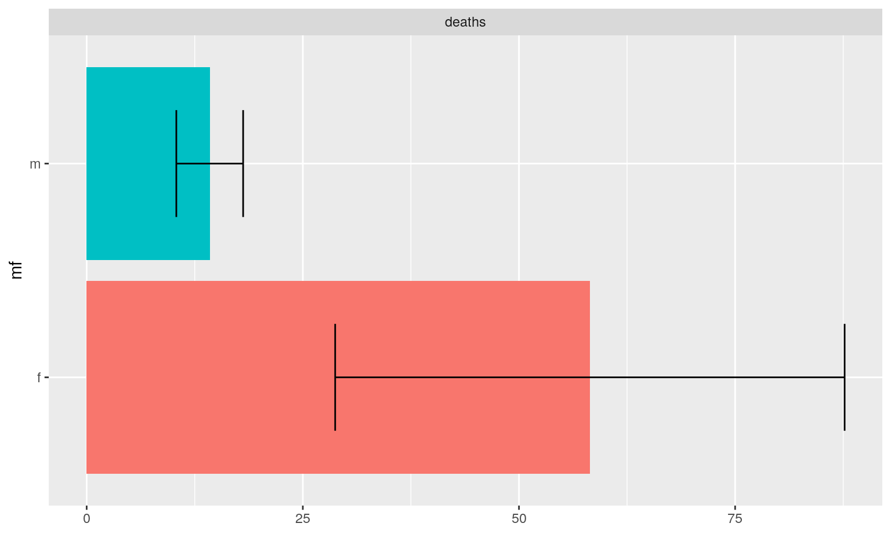
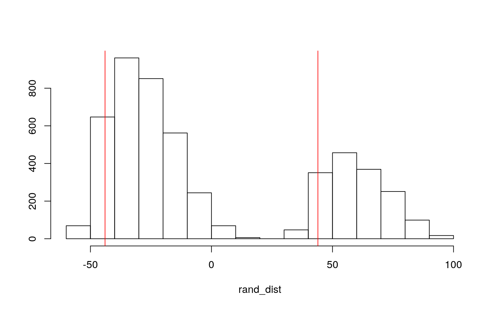
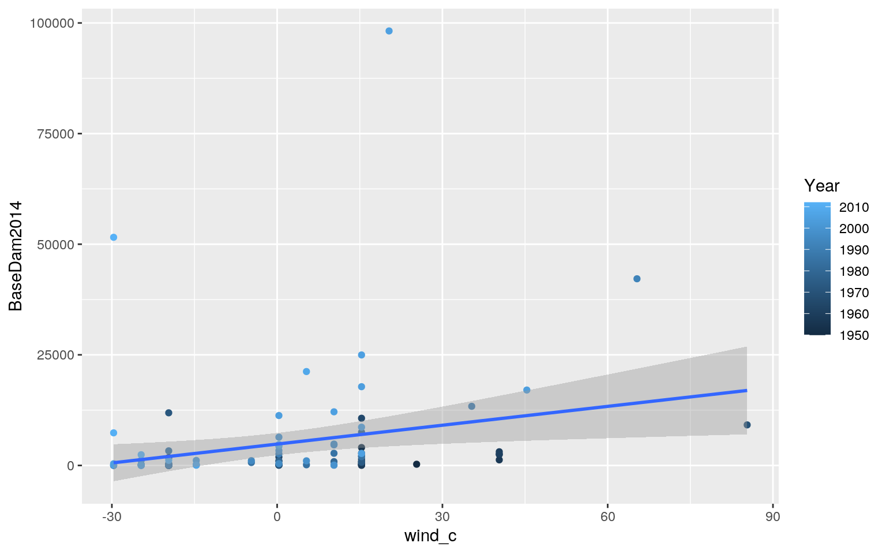
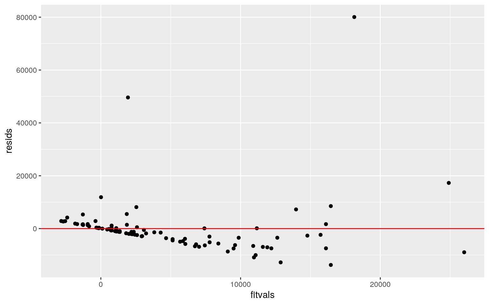
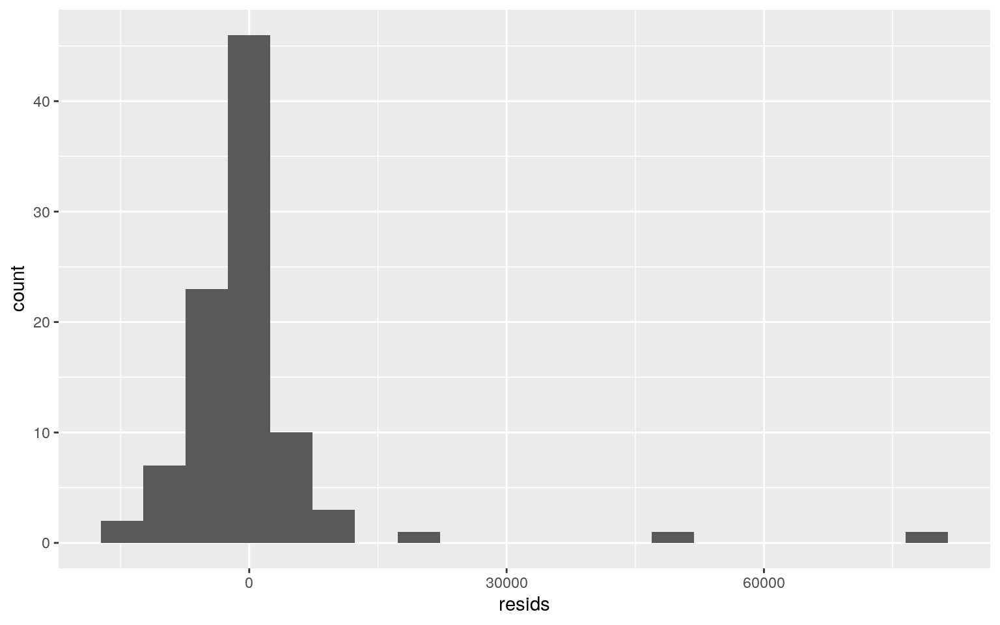
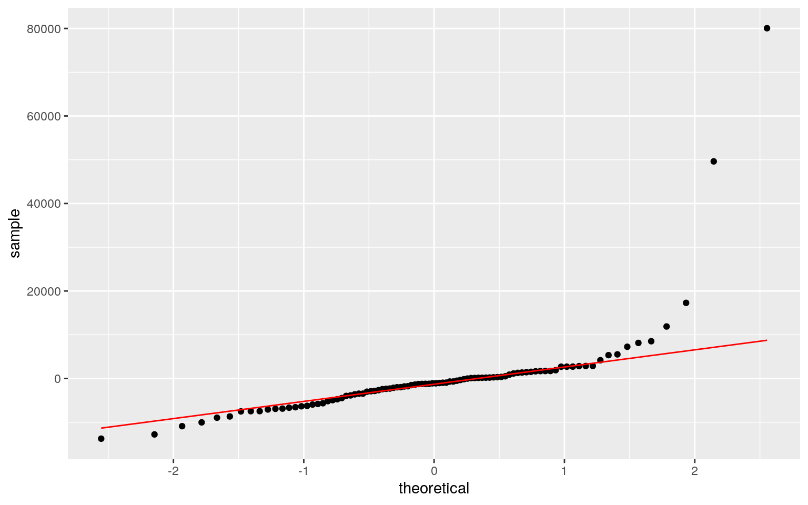
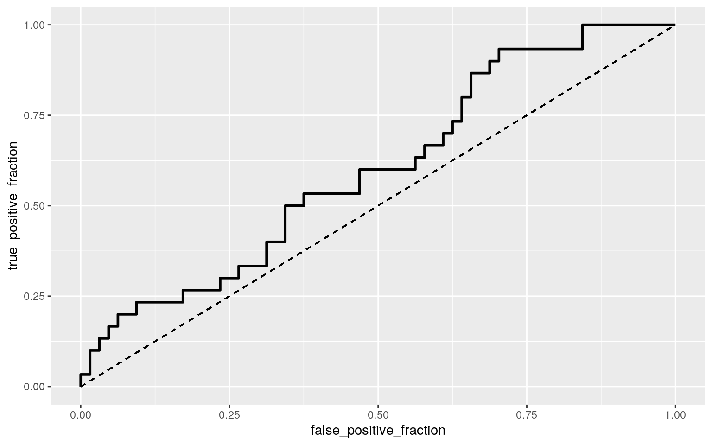
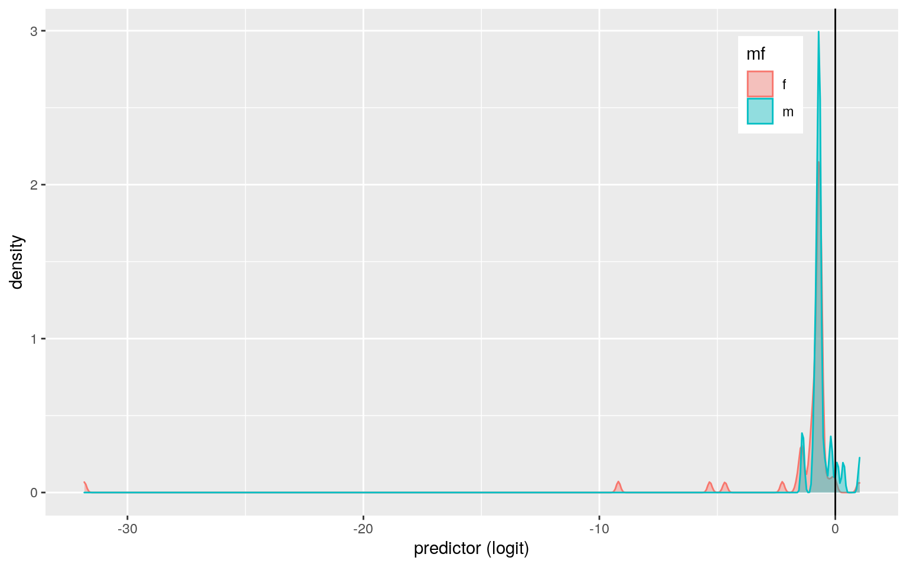
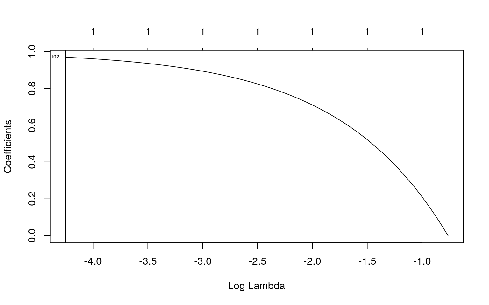

library(DAAG)
hurricNamed## Name Year LF.WindsMPH LF.PressureMB LF.times BaseDamage
NDAM2014
## Easy1950 Easy 1950 120 958 1 3.3000 1870
## King1950 King 1950 130 955 1 28.0000 6030
## Able1952 Able 1952 85 985 1 2.7500 170
## Barbara1953 Barbara 1953 85 987 1 1.0000 65
## Florence1953 Florence 1953 85 985 1 0.2000 18
## Carol1954 Carol 1954 120 960 2 460.2275 21375
## Edna1954 Edna 1954 120 954 1 40.0000 3520
## Hazel1954 Hazel 1954 145 938 1 281.0000 28500
## Connie1955 Connie 1955 120 962 1 40.0000 2270
## Diane1955 Diane 1955 85 987 1 200.0000 17250
## Ione1955 Ione 1955 120 960 1 88.0350 6990
## Flossy1956 Flossy 1956 105 975 1 25.0000 1730
## Audrey1957 Audrey 1957 145 945 1 150.0000 4290
## Helene1958 Helene 1958 120 946 1 11.2000 610
## Debra1959 Debra 1959 85 984 1 7.0000 500
## Gracie1959 Gracie 1959 120 950 1 14.0000 580
## Donna1960 Donna 1960 145 930 3 386.5000 62030
## Ethel1960 Ethel 1960 85 981 1 1.0600 39
## Carla1961 Carla 1961 145 931 1 325.0000 18130
## Cindy1963 Cindy 1963 85 996 1 12.5600 340
## Cleo1964 Cleo 1964 105 968 1 128.5000 7270
## Dora1964 Dora 1964 105 966 1 250.0000 18540
## Hilda1964 Hilda 1964 120 950 1 125.0000 3070
## Isbell1964 Isbell 1964 105 974 1 10.0000 910
## Betsy1965 Betsy 1965 120 941 2 1419.8000 20640
## Alma1966 Alma 1966 105 982 1 10.0500 870
## Inez1966 Inez 1966 85 983 1 5.0000 110
## Beulah1967 Beulah 1967 120 950 1 200.0000 5760
## Gladys1968 Gladys 1968 105 977 1 6.7000 930
## Camille1969 Camille 1969 190 909 1 1421.0000 25070
## Celia1970 Celia 1970 120 945 1 454.0000 7660
## Fern1971 Fern 1971 85 979 1 30.2300 570
## Edith1971 Edith 1971 105 978 1 25.0000 330
## Ginger1971 Ginger 1971 85 995 1 10.0000 230
## Agnes1972 Agnes 1972 85 980 2 2100.0000 22650
## Carmen1974 Carmen 1974 120 952 1 150.0000 1310
## Eloise1975 Eloise 1975 120 955 1 490.0000 7020
## Belle1976 Belle 1976 85 980 1 100.0000 620
## Babe1977 Babe 1977 85 995 1 10.0000 74
## Bob1979 Bob 1979 85 986 1 20.0000 78
## David1979 David 1979 105 970 2 320.0000 3100
## Frederic1979 Frederic 1979 120 946 1 2300.0000 14350
## Allen1980 Allen 1980 115 945 1 300.0000 2450
## Alicia1983 Alicia 1983 115 962 1 2000.0000 12000
## Diana1984 Diana 1984 110 949 1 65.0000 490
## Bob1985 Bob 1985 75 1003 1 20.0000 150
## Danny1985 Danny 1985 90 987 1 50.0000 170
## Elena1985 Elena 1985 115 959 1 1250.0000 4600
## Gloria1985 Gloria 1985 120 942 2 900.0000 3340
## Juan1985 Juan 1985 85 971 1 1500.0000 5230
## Kate1985 Kate 1985 100 967 1 300.0000 1480
## Bonnie1986 Bonnie 1986 85 990 1 2.0000 6
## Charley1986 Charley 1986 75 990 1 15.0000 66
## Floyd1987 Floyd 1987 75 993 1 0.5000 1
## Florence1988 Florence 1988 80 984 1 2.9200 4
## Chantal1989 Chantal 1989 80 986 1 100.0000 320
## Hugo1989 Hugo 1989 140 934 1 7000.0000 22690
## Jerry1989 Jerry 1989 85 983 1 70.0000 260
## Bob1991 Bob 1991 105 962 1 1500.0000 4020
## Andrew1992 Andrew 1992 170 922 2 25000.0000 75260
## Emily1993 Emily 1993 115 961 1 35.0000 110
## Erin1995 Erin 1995 100 973 2 700.0000 1850
## Opal1995 Opal 1995 115 942 1 3000.0000 8600
## Bertha1996 Bertha 1996 105 974 1 270.0000 810
## Fran1996 Fran 1996 115 954 1 3200.0000 9610
## Danny1997 Danny 1997 80 984 1 100.0000 220
## Bonnie1998 Bonnie 1998 110 964 1 720.0000 1910
## Earl1998 Earl 1998 80 987 1 79.0000 180
## Georges1998 Georges 1998 105 964 2 2310.0000 4230
## Bret1999 Bret 1999 115 951 1 60.0000 100
## Floyd1999 Floyd 1999 105 956 1 4500.0000 9200
## Irene1999 Irene 1999 80 987 1 800.0000 1610
## Lili2002 Lili 2002 90 963 1 860.0000 1380
## Claudette2003 Claudette 2003 90 979 1 180.0000 280
## Isabel2003 Isabel 2003 105 957 1 3370.0000 5610
## Alex2004 Alex 2004 80 972 1 4.0000 6
## Charley2004 Charley 2004 150 941 2 13600.0000 24590
## Gaston2004 Gaston 2004 75 985 1 130.0000 200
## Frances2004 Frances 2004 105 960 1 9000.0000 14820
## Ivan2004 Ivan 2004 120 946 1 14200.0000 21340
## Jeanne2004 Jeanne 2004 120 950 1 6900.0000 12180
## Cindy2005 Cindy 2005 75 991 1 320.0000 370
## Dennis2005 Dennis 2005 120 946 1 2230.0000 2930
## Katrina2005 Katrina 2005 125 920 1 81000.0000 88420
## Ophelia2005 Ophelia 2005 75 982 1 70.0000 100
## Rita2005 Rita 2005 115 937 1 10000.0000 11280
## Wilma2005 Wilma 2005 120 950 1 20600.0000 29330
## Humberto2007 Humberto 2007 90 985 1 50.0000 55
## Dolly2008 Dolly 2008 85 967 1 1050.0000 1260
## Gustav2008 Gustav 2008 105 954 1 4300.0000 4800
## Ike2008 Ike 2008 110 950 1 19300.0000 23070
## Irene2011 Irene 2011 75 952 1 7000.0000 7580
## Isaac2012 Isaac 2012 80 966 1 2350.0000 2400
## Sandy2012 Sandy 2012 75 942 1 50000.0000 52270
## AffectedStates firstLF deaths mf BaseDam2014
## Easy1950 FL 1950-09-04 2 f 32.419419
## King1950 FL 1950-10-17 4 m 275.073859
## Able1952 SC 1952-08-30 3 m 24.569434
## Barbara1953 NC 1953-08-13 1 f 8.867416
## Florence1953 FL 1953-09-26 0 f 1.773483
## Carol1954 NC,NY,CT,RI 1954-08-30 60 f 4050.686353
## Edna1954 MA,ME 1954-09-11 20 f 352.059480
## Hazel1954 SC,NC,MD 1954-10-18 20 f 2473.217844
## Connie1955 NC,VA 1955-08-12 0 f 353.373134
## Diane1955 NC 1955-08-17 200 f 1766.865672
## Ione1955 NC 1955-09-19 7 m 777.730097
## Flossy1956 LA,MS,AL,FL 1956-09-24 15 f 217.610294
## Audrey1957 TX,LA 1957-06-27 416 f 1263.843416
## Helene1958 NC 1958-09-27 1 f 91.754740
## Debra1959 TX 1959-07-25 0 f 56.952577
## Gracie1959 SC 1959-09-29 22 f 113.905155
## Donna1960 FL,NC,NY,CT,RI,MA,NH,ME 1960-09-10 50 f
3091.477703
## Ethel1960 MS 1960-09-15 0 f 8.478568
## Carla1961 TX 1961-09-11 46 f 2573.478261
## Cindy1963 TX 1963-09-17 3 f 97.179922
## Cleo1964 FL 1964-08-27 3 f 981.408387
## Dora1964 FL 1964-09-09 5 f 1909.354839
## Hilda1964 LA 1964-10-03 37 f 954.677419
## Isbell1964 FL 1964-10-14 3 f 76.374194
## Betsy1965 FL,LA 1965-09-08 75 f 10671.487238
## Alma1966 FL 1966-06-09 6 f 73.439444
## Inez1966 FL 1966-10-04 3 f 36.537037
## Beulah1967 TX 1967-09-20 15 f 1417.724551
## Gladys1968 FL 1968-10-18 3 f 45.583103
## Camille1969 LA,MS 1969-08-17 256 f 9167.192371
## Celia1970 TX 1970-08-03 22 f 2770.336082
## Fern1971 TX 1971-09-10 2 f 176.722341
## Edith1971 LA 1971-09-16 0 f 146.148148
## Ginger1971 NC 1971-09-30 0 f 58.459259
## Agnes1972 FL,NY,CT,PA 1972-06-19 117 f 11894.641148
## Carmen1974 LA 1974-09-07 1 f 720.365112
## Eloise1975 FL,AL 1975-09-23 21 f 2156.364312
## Belle1976 NY 1976-08-09 5 f 416.098418
## Babe1977 LA 1977-09-05 0 f 39.069307
## Bob1979 LA 1979-07-11 1 m 65.223140
## David1979 FL,GA,SC 1979-09-03 15 m 1043.570248
## Frederic1979 AL, MS 1979-09-12 5 m 7500.661157
## Allen1980 TX 1980-08-09 2 m 861.990291
## Alicia1983 TX 1983-08-18 21 f 4754.216867
## Diana1984 NC 1984-09-13 3 f 148.117421
## Bob1985 SC 1985-07-25 0 m 44.007435
## Danny1985 LA 1985-08-15 1 m 110.018587
## Elena1985 MS,AL,FL 1985-09-02 4 f 2750.464684
## Gloria1985 NC,NY,CT,NH.ME 1985-09-26 8 f 1980.334572
## Juan1985 LA 1985-10-29 12 m 3300.557621
## Kate1985 FL,GA 1985-11-21 5 f 660.111524
## Bonnie1986 TX 1986-06-26 3 f 4.320438
## Charley1986 NC 1986-08-17 5 m 32.403285
## Floyd1987 FL 1987-10-12 0 m 1.042077
## Florence1988 LA 1988-09-09 1 f 5.843949
## Chantal1989 TX 1989-08-01 13 f 190.935484
## Hugo1989 SC,NC 1989-09-21 21 m 13365.483871
## Jerry1989 TX 1989-10-15 3 m 133.654839
## Bob1991 RI,MA,NY,CT 1991-08-19 15 m 2607.488987
## Andrew1992 FL,LA 1992-08-24 62 m 42188.168211
## Emily1993 NC 1993-08-31 3 f 57.346713
## Erin1995 FL,FL 1995-08-02 6 f 1087.480315
## Opal1995 FL,AL 1995-10-04 9 f 4660.629921
## Bertha1996 NC 1996-07-12 8 f 407.426386
## Fran1996 NC 1996-09-05 26 f 4828.757170
## Danny1997 LA,AL 1997-07-19 10 m 147.514019
## Bonnie1998 NC 1998-08-26 3 f 1045.811043
## Earl1998 FL 1998-09-02 3 m 114.748712
## Georges1998 FL,MS 1998-09-25 1 m 3355.310429
## Bret1999 TX 1999-08-22 0 m 85.267707
## Floyd1999 NC 1999-09-16 56 m 6395.078031
## Irene1999 FL 1999-10-15 8 f 1136.902761
## Lili2002 LA 2002-10-03 2 f 1131.941294
## Claudette2003 TX 2003-07-15 3 f 231.663405
## Isabel2003 NC,VA 2003-09-18 51 f 4337.253751
## Alex2004 NC 2004-08-03 1 m 5.013446
## Charley2004 FL,SC,NC 2004-08-13 10 m 17045.717311
## Gaston2004 SC 2004-08-29 8 m 162.937004
## Frances2004 FL 2004-09-05 7 f 11280.254103
## Ivan2004 AL,FL 2004-09-16 25 m 17797.734251
## Jeanne2004 FL 2004-09-26 5 f 8648.194812
## Cindy2005 LA 2005-07-05 1 f 387.932412
## Dennis2005 FL,AL 2005-07-10 15 m 2703.403994
## Katrina2005 LA,MS,FL,AL 2005-08-29 1836 f 98195.391705
## Ophelia2005 NC 2005-09-15 1 f 84.860215
## Rita2005 LA,TX,FL 2005-09-24 62 f 12122.887865
## Wilma2005 FL 2005-10-24 5 f 24973.149002
## Humberto2007 TX,LA 2007-09-13 1 m 57.094076
## Dolly2008 TX 2008-07-23 1 f 1154.642527
## Gustav2008 LA 2008-09-01 52 m 4728.536063
## Ike2008 TX,LA 2008-09-13 84 m 21223.429307
## Irene2011 NC,VA,MD,DE,NJ,NY,MA 2011-08-27 41 f
7367.864177
## Isaac2012 LA 2012-08-28 5 m 2423.347300
## Sandy2012 NY 2012-10-29 159 f 51560.580851# I am splitting the states to only have 1 state to make my following tests easier to understand
hurric <- hurricNamed%>%separate(AffectedStates,into = c("State", NA), sep=',', convert=T)The dataset I am using is located in the DAAG package called hurricNamed. This dataset contains information about 94 US Atlantic hurricanesfrom 1950-2012. The variables include, year, name of the hurricane, gender of name, states affected, the number of deaths, property damage in millions of 2014 dollars, maximum windspeed in MPH, and atmospheric pressure at landfall in MB.
#Performing MANOVA
man1<-manova(cbind(deaths,LF.PressureMB, LF.WindsMPH, BaseDam2014)~mf, data=hurric)
summary(man1)## Df Pillai approx F num Df den Df Pr(>F)
## mf 1 0.040936 0.9497 4 89 0.4393
## Residuals 92#performing univariate ANOVAs
summary.aov(man1)## Response deaths :
## Df Sum Sq Mean Sq F value Pr(>F)
## mf 1 39490 39490 1.0343 0.3118
## Residuals 92 3512564 38180
##
## Response LF.PressureMB :
## Df Sum Sq Mean Sq F value Pr(>F)
## mf 1 112 112.00 0.2851 0.5947
## Residuals 92 36148 392.91
##
## Response LF.WindsMPH :
## Df Sum Sq Mean Sq F value Pr(>F)
## mf 1 210 209.57 0.4121 0.5225
## Residuals 92 46781 508.49
##
## Response BaseDam2014 :
## Df Sum Sq Mean Sq F value Pr(>F)
## mf 1 6.5978e+05 659783 0.0041 0.9491
## Residuals 92 1.4823e+10 161122738#t test on mf / variable just to check
pairwise.t.test(hurric$deaths,hurric$mf, p.adj="none")##
## Pairwise comparisons using t tests with pooled SD
##
## data: hurric$deaths and hurric$mf
##
## f
## m 0.31
##
## P value adjustment method: nonepairwise.t.test(hurric$LF.WindsMPH,hurric$mf, p.adj="none")##
## Pairwise comparisons using t tests with pooled SD
##
## data: hurric$LF.WindsMPH and hurric$mf
##
## f
## m 0.52
##
## P value adjustment method: nonepairwise.t.test(hurric$LF.PressureMB,hurric$mf, p.adj="none")##
## Pairwise comparisons using t tests with pooled SD
##
## data: hurric$LF.PressureMB and hurric$mf
##
## f
## m 0.59
##
## P value adjustment method: nonepairwise.t.test(hurric$BaseDam2014,hurric$mf, p.adj="none")##
## Pairwise comparisons using t tests with pooled SD
##
## data: hurric$BaseDam2014 and hurric$mf
##
## f
## m 0.95
##
## P value adjustment method: noneAccording to the MANOVA, none of the following variables differ significantly by the gender of the hurricane: deaths, pressure, wind speed, property damage. Running univariate ANOVAs confirmed that none of the variance was significant. An additional t test confirmed this further. After using these nine tests, the probability of at least one Type I error is 0.37 (1-0.95^9). With Bonferri correction, the p value would need to be less than 0.005. The MANOVA test makes several assumptions about the data, that the samples are random and independent, that the DVs have multivariate normality, there is homogeneity within group covariance matrixes, a linear relationship between DVs, and lastly no extreme outliers or multicollinearity. I think it is unlikely for all of these to have been met in the dataset.
#Randomization Test
#Plot of data
hurric%>%select(mf,deaths)%>%pivot_longer(-1,names_to='DV', values_to='measure')%>%
ggplot(aes(mf,measure,fill=mf))+geom_bar(stat="summary")+geom_errorbar(stat="summary", width=.5)+
facet_wrap(~DV, nrow=2)+coord_flip()+ylab("")+theme(legend.position = "none")
#simulate own null distribution
hurric%>%group_by(mf)%>%
summarize(means=mean(deaths))%>%summarize(`mean_diff`=diff(means))## # A tibble: 1 x 1
## mean_diff
## <dbl>
## 1 -44.0# if null hypothesis is true this would be mean diff
rand_dist<-vector() #create vector to hold diffs under null hypothesis
for(i in 1:5000){
new<-data.frame(death=sample(hurric$deaths),mf=hurric$mf) #scramble columns
rand_dist[i]<-mean(new[new$mf=="m",]$death)-
mean(new[new$mf=="f",]$death)} #compute mean difference (base R)
hist(rand_dist,main="",ylab=""); abline(v = c(-43.97, 43.97),col="red")
#two tailed p value
mean(rand_dist>43.97 | rand_dist < -43.97)## [1] 0.3638Because deaths had the most significant result when splitting up hurricane by gender, I decided to perform a randomization test on it. The null hypothesis is that there is no significant difference between male and female hurricanes when it comes to the amount of deaths they caused. The alternative hypothesis is that there is a significant difference. I performed a permutation test on the mean differences. Because the p value is greater than 0.05, we fail to reject the null hypothesis.
#mean center numeric
hurric$wind_c <- hurric$LF.WindsMPH - mean(hurric$LF.WindsMPH)
#run linear regression
fit<-lm(BaseDam2014 ~ Year * wind_c, data=hurric)
summary(fit)##
## Call:
## lm(formula = BaseDam2014 ~ Year * wind_c, data = hurric)
##
## Residuals:
## Min 1Q Median 3Q Max
## -13755 -3953 -1106 1348 80059
##
## Coefficients:
## Estimate Std. Error t value Pr(>|t|)
## (Intercept) -5.059e+05 1.248e+05 -4.055 0.000106 ***
## Year 2.580e+02 6.294e+01 4.099 9.08e-05 ***
## wind_c -1.144e+04 5.615e+03 -2.037 0.044553 *
## Year:wind_c 5.873e+00 2.835e+00 2.072 0.041153 *
## ---
## Signif. codes: 0 '***' 0.001 '**' 0.01 '*' 0.05 '.' 0.1
' ' 1
##
## Residual standard error: 11160 on 90 degrees of freedom
## Multiple R-squared: 0.2439, Adjusted R-squared: 0.2187
## F-statistic: 9.678 on 3 and 90 DF, p-value: 1.336e-05#graph
ggplot(hurric, aes(y=BaseDam2014, x=wind_c, color=Year)) + geom_point() + geom_smooth(method="lm")
#check for homoskedacity
library(sandwich)
library(lmtest)
resids<-fit$residuals; fitvals<-fit$fitted.values
ggplot()+geom_point(aes(fitvals,resids))+geom_hline(yintercept=0, col="red")
bptest(fit)##
## studentized Breusch-Pagan test
##
## data: fit
## BP = 5.4545, df = 3, p-value = 0.1414#check for normality
ggplot()+geom_histogram(aes(resids),bins=20)
#Linearity
ggplot()+geom_qq(aes(sample=resids))+geom_qq_line(aes(sample=resids), color='red')
#robust standard errors
coeftest(fit, vcov = vcovHC(fit))[,1:2] ## Estimate Std. Error
## (Intercept) -5.058932e+05 1.769745e+05
## Year 2.579596e+02 8.993406e+01
## wind_c -1.144056e+04 9.252406e+03
## Year:wind_c 5.873426e+00 4.702899e+00A linear regression is done to see if there is an effect of the year or wind speed on property damage (adjusted to 2014 dollars). The predicted property damage for a year in the middle with average wind damage is -5.06e+05. Years with no wind speed have a predicted property damage cost of 2.58e+02. Wind has a significant effect on property damage for years in the middle, but for every increase in wind MPH, the damage goes down by -1.144e+04. The slope of wind speed on property damage for middle years is 5.87 times greater than for other years. R squared is 0.198, so only 19.8% of the variation in response variable is due to these two variables. I checked for normality, linearity, and homoskedacity. After recomputing with robust standard errors, none of the estimates changed but the standard errors increased.
#Bootstraping
samp_distn<-replicate(5000, {
boot_dat <- sample_frac(hurric, replace=T)
boot_fit <- lm(BaseDam2014~Year*wind_c, data=boot_dat)
coef(boot_fit)
})
boot_dat <- sample_frac(hurric, replace=T)
boot_fit <- lm(BaseDam2014~Year*wind_c, data=boot_dat)
coef(boot_fit)## (Intercept) Year wind_c Year:wind_c
## -862788.07379 439.52187 -26167.35333 13.35695 summary(boot_fit)##
## Call:
## lm(formula = BaseDam2014 ~ Year * wind_c, data =
boot_dat)
##
## Residuals:
## Min 1Q Median 3Q Max
## -28158 -8960 -1405 2495 67280
##
## Coefficients:
## Estimate Std. Error t value Pr(>|t|)
## (Intercept) -8.628e+05 1.830e+05 -4.715 8.78e-06 ***
## Year 4.395e+02 9.232e+01 4.761 7.33e-06 ***
## wind_c -2.617e+04 8.512e+03 -3.074 0.00279 **
## Year:wind_c 1.336e+01 4.293e+00 3.111 0.00250 **
## ---
## Signif. codes: 0 '***' 0.001 '**' 0.01 '*' 0.05 '.' 0.1
' ' 1
##
## Residual standard error: 17260 on 90 degrees of freedom
## Multiple R-squared: 0.3087, Adjusted R-squared: 0.2857
## F-statistic: 13.4 on 3 and 90 DF, p-value: 2.639e-07## Estimated SEs
samp_distn %>% t %>% as.data.frame %>% summarize_all(sd)## (Intercept) Year wind_c Year:wind_c
## 1 165752.5 84.22601 8850.744 4.498729These standard errors are lower than the robust standard errors, but higher than the original standard errors. The p values are all lower.
data<-hurric%>%mutate(y=ifelse(mf=="m",1,0))
head(data)## Name Year LF.WindsMPH LF.PressureMB LF.times BaseDamage
NDAM2014 State firstLF deaths mf
## 1 Easy 1950 120 958 1 3.3000 1870 FL 1950-09-04 2 f
## 2 King 1950 130 955 1 28.0000 6030 FL 1950-10-17 4 m
## 3 Able 1952 85 985 1 2.7500 170 SC 1952-08-30 3 m
## 4 Barbara 1953 85 987 1 1.0000 65 NC 1953-08-13 1 f
## 5 Florence 1953 85 985 1 0.2000 18 FL 1953-09-26 0 f
## 6 Carol 1954 120 960 2 460.2275 21375 NC 1954-08-30 60 f
## BaseDam2014 wind_c y
## 1 32.419419 15.31915 0
## 2 275.073859 25.31915 1
## 3 24.569434 -19.68085 1
## 4 8.867416 -19.68085 0
## 5 1.773483 -19.68085 0
## 6 4050.686353 15.31915 0fit2<-glm(y~deaths+BaseDam2014, family="binomial", data=data)
coeftest(fit2)##
## z test of coefficients:
##
## Estimate Std. Error z value Pr(>|z|)
## (Intercept) -6.5308e-01 2.6162e-01 -2.4963 0.01255 *
## deaths -2.0745e-02 1.2998e-02 -1.5960 0.11048
## BaseDam2014 7.0374e-05 4.0123e-05 1.7539 0.07944 .
## ---
## Signif. codes: 0 '***' 0.001 '**' 0.01 '*' 0.05 '.' 0.1
' ' 1#confusion matrix
prob<-predict(fit2,type="response")
pred<-ifelse(prob>.5,1,0)
table(truth=hurric$mf, prediction=pred)%>%addmargins## prediction
## truth 0 1 Sum
## f 63 1 64
## m 27 3 30
## Sum 90 4 94#auc
library(plotROC)
ROCplot<-ggplot(hurric)+geom_roc(aes(d=mf,m=prob), n.cuts=0)+ geom_segment(aes(x=0,xend=1,y=0,yend=1),lty=2)
ROCplot
calc_auc(ROCplot)## PANEL group AUC
## 1 1 -1 0.6015625#density plot
data$logit<-predict(fit2,type="link")
data%>%ggplot()+geom_density(aes(logit,color=mf,fill=mf), alpha=.4)+
theme(legend.position=c(.85,.85))+geom_vline(xintercept=0)+xlab("predictor (logit)") Looking at the coefficients, deaths multiplies the odds of the hurricane being a male by a factor of e^-0.02 (0.98), while property damage multiplies the odds by a factor of e^.00007 (~1). Looking at the confusion matrix, the accuracy is (63+3)/95 = 0.69, the sensitivity is 0.75, the specificity is 0.7, and the precision is 0.1. The AUC is only 0.6, which is not good. This means it did not perform very well.
#This is for the next part
## GIVE IT PREDICTED PROBS AND TRUTH LABELS, RETURNS VARIOUS DIAGNOSTICS
class_diag<-function(probs,truth){
if(is.numeric(truth)==FALSE & is.logical(truth)==FALSE) truth<-as.numeric(truth)-1
tab<-table(factor(probs>.5,levels=c("FALSE","TRUE")),truth)
prediction<-ifelse(probs>.5,1,0)
acc=mean(truth==prediction)
sens=mean(prediction[truth==1]==1)
spec=mean(prediction[truth==0]==0)
ppv=mean(truth[prediction==1]==1)
f1=2*(sens*ppv)/(sens+ppv)
#CALCULATE EXACT AUC
ord<-order(probs, decreasing=TRUE)
probs <- probs[ord]; truth <- truth[ord]
TPR=cumsum(truth)/max(1,sum(truth))
FPR=cumsum(!truth)/max(1,sum(!truth))
dup<-c(probs[-1]>=probs[-length(probs)], FALSE)
TPR<-c(0,TPR[!dup],1); FPR<-c(0,FPR[!dup],1)
n <- length(TPR)
auc<- sum( ((TPR[-1]+TPR[-n])/2) * (FPR[-1]-FPR[-n]) )
data.frame(acc,sens,spec,ppv,auc)
}fit3<-glm(y~(.)^2,data=data,family="binomial")
coef(fit3)## (Intercept) NameAgnes NameAlex
## 2.656637e+01 -5.313213e+01 8.264939e-06
## NameAlicia NameAllen NameAlma
## -5.313213e+01 1.133250e-06 -5.313213e+01
## NameAndrew NameAudrey NameBabe
## 1.012165e-05 -5.313214e+01 -5.313213e+01
## NameBarbara NameBelle NameBertha
## -5.313213e+01 -5.313213e+01 -5.313213e+01
## NameBetsy NameBeulah NameBob
## -5.313214e+01 -5.313214e+01 4.974646e-06
## NameBonnie NameBret NameCamille
## -5.313213e+01 -1.189673e-06 -5.313214e+01
## NameCarla NameCarmen NameCarol
## -5.313214e+01 -5.313214e+01 -5.313213e+01
## NameCelia NameChantal NameCharley
## -5.313214e+01 -5.313213e+01 9.875721e-06
## NameCindy NameClaudette NameCleo
## -5.313213e+01 -5.313213e+01 -5.313213e+01
## NameConnie NameDanny NameDavid
## -5.313213e+01 5.545950e-06 5.187020e-06
## NameDebra NameDennis NameDiana
## -5.313213e+01 4.208749e-06 -5.313213e+01
## NameDiane NameDolly NameDonna
## -5.313213e+01 -5.313213e+01 -5.313214e+01
## NameDora NameEarl NameEasy
## -5.313213e+01 3.598646e-06 -5.313214e+01
## NameEdith NameEdna NameElena
## -5.313213e+01 -5.313214e+01 -5.313213e+01
## NameEloise NameEmily NameErin
## -5.313213e+01 -5.313213e+01 -5.313213e+01
## NameEthel NameFern NameFlorence
## -5.313213e+01 -5.313213e+01 -5.313213e+01
## NameFlossy NameFloyd NameFran
## -5.313214e+01 8.257553e-06 -5.313213e+01
## NameFrances NameFrederic NameGaston
## -5.313213e+01 1.876872e-06 7.963302e-06
## NameGeorges NameGinger NameGladys
## 6.511635e-06 -5.313213e+01 -5.313213e+01
## NameGloria NameGracie NameGustav
## -5.313213e+01 -5.313214e+01 4.171883e-06
## NameHazel NameHelene NameHilda
## -5.313214e+01 -5.313214e+01 -5.313214e+01
## NameHugo NameHumberto NameIke
## -1.255683e-06 8.643266e-06 1.294091e-05
## NameInez NameIone NameIrene
## -5.313213e+01 -7.029254e-07 -5.313213e+01
## NameIsaac NameIsabel NameIsbell
## 2.647441e-07 -5.313213e+01 -5.313213e+01
## NameIvan NameJeanne NameJerry
## 9.484027e-06 -5.313213e+01 6.881244e-06
## NameJuan NameKate NameKatrina
## 3.216203e-06 -5.313213e+01 -5.313210e+01
## NameKing NameLili NameOpal
## 1.119046e-06 -5.313213e+01 -5.313213e+01
## NameOphelia NameRita NameSandy
## -5.313213e+01 -5.313213e+01 -5.313211e+01
## NameWilma Year LF.WindsMPH
## -5.313212e+01 -6.958086e-08 -3.464823e-08
## LF.PressureMB LF.times BaseDamage
## -1.680348e-07 -2.915983e-07 -5.387499e-10
## NDAM2014 StateFL StateLA
## 5.049147e-11 -1.963685e-07 1.899858e-06
## StateMA StateMS StateNC
## NA NA -2.377043e-06
## StateNY StateRI StateSC
## NA NA NA
## StateTX firstLF deaths
## NA NA NA
## mfm BaseDam2014 wind_c
## NA NA NA
## logit NameAgnes:Year NameAlex:Year
## NA NA NA
## NameAlicia:Year NameAllen:Year NameAlma:Year
## NA NA NA
## NameAndrew:Year NameAudrey:Year NameBabe:Year
## NA NA NA
## NameBarbara:Year NameBelle:Year NameBertha:Year
## NA NA NA
## NameBetsy:Year NameBeulah:Year NameBob:Year
## NA NA NA
## NameBonnie:Year NameBret:Year NameCamille:Year
## NA NA NA
## NameCarla:Year NameCarmen:Year NameCarol:Year
## NA NA NA
## NameCelia:Year NameChantal:Year NameCharley:Year
## NA NA NA
## NameCindy:Year NameClaudette:Year NameCleo:Year
## NA NA NA
## NameConnie:Year NameDanny:Year NameDavid:Year
## NA NA NA
## NameDebra:Year NameDennis:Year NameDiana:Year
## NA NA NA
## NameDiane:Year NameDolly:Year NameDonna:Year
## NA NA NA
## NameDora:Year NameEarl:Year NameEasy:Year
## NA NA NA
## NameEdith:Year NameEdna:Year NameElena:Year
## NA NA NA
## NameEloise:Year NameEmily:Year NameErin:Year
## NA NA NA
## NameEthel:Year NameFern:Year NameFlorence:Year
## NA NA NA
## NameFlossy:Year NameFloyd:Year NameFran:Year
## NA NA NA
## NameFrances:Year NameFrederic:Year NameGaston:Year
## NA NA NA
## NameGeorges:Year NameGinger:Year NameGladys:Year
## NA NA NA
## NameGloria:Year NameGracie:Year NameGustav:Year
## NA NA NA
## NameHazel:Year NameHelene:Year NameHilda:Year
## NA NA NA
## NameHugo:Year NameHumberto:Year NameIke:Year
## NA NA NA
## NameInez:Year NameIone:Year NameIrene:Year
## NA NA NA
## NameIsaac:Year NameIsabel:Year NameIsbell:Year
## NA NA NA
## NameIvan:Year NameJeanne:Year NameJerry:Year
## NA NA NA
## NameJuan:Year NameKate:Year NameKatrina:Year
## NA NA NA
## NameKing:Year NameLili:Year NameOpal:Year
## NA NA NA
## NameOphelia:Year NameRita:Year NameSandy:Year
## NA NA NA
## NameWilma:Year NameAgnes:LF.WindsMPH
NameAlex:LF.WindsMPH
## NA NA NA
## NameAlicia:LF.WindsMPH NameAllen:LF.WindsMPH
NameAlma:LF.WindsMPH
## NA NA NA
## NameAndrew:LF.WindsMPH NameAudrey:LF.WindsMPH
NameBabe:LF.WindsMPH
## NA NA NA
## NameBarbara:LF.WindsMPH NameBelle:LF.WindsMPH
NameBertha:LF.WindsMPH
## NA NA NA
## NameBetsy:LF.WindsMPH NameBeulah:LF.WindsMPH
NameBob:LF.WindsMPH
## NA NA NA
## NameBonnie:LF.WindsMPH NameBret:LF.WindsMPH
NameCamille:LF.WindsMPH
## NA NA NA
## NameCarla:LF.WindsMPH NameCarmen:LF.WindsMPH
NameCarol:LF.WindsMPH
## NA NA NA
## NameCelia:LF.WindsMPH NameChantal:LF.WindsMPH
NameCharley:LF.WindsMPH
## NA NA NA
## NameCindy:LF.WindsMPH NameClaudette:LF.WindsMPH
NameCleo:LF.WindsMPH
## NA NA NA
## NameConnie:LF.WindsMPH NameDanny:LF.WindsMPH
NameDavid:LF.WindsMPH
## NA NA NA
## NameDebra:LF.WindsMPH NameDennis:LF.WindsMPH
NameDiana:LF.WindsMPH
## NA NA NA
## NameDiane:LF.WindsMPH NameDolly:LF.WindsMPH
NameDonna:LF.WindsMPH
## NA NA NA
## NameDora:LF.WindsMPH NameEarl:LF.WindsMPH
NameEasy:LF.WindsMPH
## NA NA NA
## NameEdith:LF.WindsMPH NameEdna:LF.WindsMPH
NameElena:LF.WindsMPH
## NA NA NA
## NameEloise:LF.WindsMPH NameEmily:LF.WindsMPH
NameErin:LF.WindsMPH
## NA NA NA
## NameEthel:LF.WindsMPH NameFern:LF.WindsMPH
NameFlorence:LF.WindsMPH
## NA NA NA
## NameFlossy:LF.WindsMPH NameFloyd:LF.WindsMPH
NameFran:LF.WindsMPH
## NA NA NA
## NameFrances:LF.WindsMPH NameFrederic:LF.WindsMPH
NameGaston:LF.WindsMPH
## NA NA NA
## NameGeorges:LF.WindsMPH NameGinger:LF.WindsMPH
NameGladys:LF.WindsMPH
## NA NA NA
## NameGloria:LF.WindsMPH NameGracie:LF.WindsMPH
NameGustav:LF.WindsMPH
## NA NA NA
## NameHazel:LF.WindsMPH NameHelene:LF.WindsMPH
NameHilda:LF.WindsMPH
## NA NA NA
## NameHugo:LF.WindsMPH NameHumberto:LF.WindsMPH
NameIke:LF.WindsMPH
## NA NA NA
## NameInez:LF.WindsMPH NameIone:LF.WindsMPH
NameIrene:LF.WindsMPH
## NA NA NA
## NameIsaac:LF.WindsMPH NameIsabel:LF.WindsMPH
NameIsbell:LF.WindsMPH
## NA NA NA
## NameIvan:LF.WindsMPH NameJeanne:LF.WindsMPH
NameJerry:LF.WindsMPH
## NA NA NA
## NameJuan:LF.WindsMPH NameKate:LF.WindsMPH
NameKatrina:LF.WindsMPH
## NA NA NA
## NameKing:LF.WindsMPH NameLili:LF.WindsMPH
NameOpal:LF.WindsMPH
## NA NA NA
## NameOphelia:LF.WindsMPH NameRita:LF.WindsMPH
NameSandy:LF.WindsMPH
## NA NA NA
## NameWilma:LF.WindsMPH NameAgnes:LF.PressureMB
NameAlex:LF.PressureMB
## NA NA NA
## NameAlicia:LF.PressureMB NameAllen:LF.PressureMB
NameAlma:LF.PressureMB
## NA NA NA
## NameAndrew:LF.PressureMB NameAudrey:LF.PressureMB
NameBabe:LF.PressureMB
## NA NA NA
## NameBarbara:LF.PressureMB NameBelle:LF.PressureMB
NameBertha:LF.PressureMB
## NA NA NA
## NameBetsy:LF.PressureMB NameBeulah:LF.PressureMB
NameBob:LF.PressureMB
## NA NA NA
## NameBonnie:LF.PressureMB NameBret:LF.PressureMB
NameCamille:LF.PressureMB
## NA NA NA
## NameCarla:LF.PressureMB NameCarmen:LF.PressureMB
NameCarol:LF.PressureMB
## NA NA NA
## NameCelia:LF.PressureMB NameChantal:LF.PressureMB
NameCharley:LF.PressureMB
## NA NA NA
## NameCindy:LF.PressureMB NameClaudette:LF.PressureMB
NameCleo:LF.PressureMB
## NA NA NA
## NameConnie:LF.PressureMB NameDanny:LF.PressureMB
NameDavid:LF.PressureMB
## NA NA NA
## NameDebra:LF.PressureMB NameDennis:LF.PressureMB
NameDiana:LF.PressureMB
## NA NA NA
## NameDiane:LF.PressureMB NameDolly:LF.PressureMB
NameDonna:LF.PressureMB
## NA NA NA
## NameDora:LF.PressureMB NameEarl:LF.PressureMB
NameEasy:LF.PressureMB
## NA NA NA
## NameEdith:LF.PressureMB NameEdna:LF.PressureMB
NameElena:LF.PressureMB
## NA NA NA
## NameEloise:LF.PressureMB NameEmily:LF.PressureMB
NameErin:LF.PressureMB
## NA NA NA
## NameEthel:LF.PressureMB NameFern:LF.PressureMB
NameFlorence:LF.PressureMB
## NA NA NA
## NameFlossy:LF.PressureMB NameFloyd:LF.PressureMB
NameFran:LF.PressureMB
## NA NA NA
## NameFrances:LF.PressureMB NameFrederic:LF.PressureMB
NameGaston:LF.PressureMB
## NA NA NA
## NameGeorges:LF.PressureMB NameGinger:LF.PressureMB
NameGladys:LF.PressureMB
## NA NA NA
## NameGloria:LF.PressureMB NameGracie:LF.PressureMB
NameGustav:LF.PressureMB
## NA NA NA
## NameHazel:LF.PressureMB NameHelene:LF.PressureMB
NameHilda:LF.PressureMB
## NA NA NA
## NameHugo:LF.PressureMB NameHumberto:LF.PressureMB
NameIke:LF.PressureMB
## NA NA NA
## NameInez:LF.PressureMB NameIone:LF.PressureMB
NameIrene:LF.PressureMB
## NA NA NA
## NameIsaac:LF.PressureMB NameIsabel:LF.PressureMB
NameIsbell:LF.PressureMB
## NA NA NA
## NameIvan:LF.PressureMB NameJeanne:LF.PressureMB
NameJerry:LF.PressureMB
## NA NA NA
## NameJuan:LF.PressureMB NameKate:LF.PressureMB
NameKatrina:LF.PressureMB
## NA NA NA
## NameKing:LF.PressureMB NameLili:LF.PressureMB
NameOpal:LF.PressureMB
## NA NA NA
## NameOphelia:LF.PressureMB NameRita:LF.PressureMB
NameSandy:LF.PressureMB
## NA NA NA
## NameWilma:LF.PressureMB NameAgnes:LF.times
NameAlex:LF.times
## NA NA NA
## NameAlicia:LF.times NameAllen:LF.times NameAlma:LF.times
## NA NA NA
## NameAndrew:LF.times NameAudrey:LF.times
NameBabe:LF.times
## NA NA NA
## NameBarbara:LF.times NameBelle:LF.times
NameBertha:LF.times
## NA NA NA
## NameBetsy:LF.times NameBeulah:LF.times NameBob:LF.times
## NA NA NA
## NameBonnie:LF.times NameBret:LF.times
NameCamille:LF.times
## NA NA NA
## NameCarla:LF.times NameCarmen:LF.times
NameCarol:LF.times
## NA NA NA
## NameCelia:LF.times NameChantal:LF.times
NameCharley:LF.times
## NA NA NA
## NameCindy:LF.times NameClaudette:LF.times
NameCleo:LF.times
## NA NA NA
## NameConnie:LF.times NameDanny:LF.times
NameDavid:LF.times
## NA NA NA
## NameDebra:LF.times NameDennis:LF.times
NameDiana:LF.times
## NA NA NA
## NameDiane:LF.times NameDolly:LF.times NameDonna:LF.times
## NA NA NA
## NameDora:LF.times NameEarl:LF.times NameEasy:LF.times
## NA NA NA
## NameEdith:LF.times NameEdna:LF.times NameElena:LF.times
## NA NA NA
## NameEloise:LF.times NameEmily:LF.times NameErin:LF.times
## NA NA NA
## NameEthel:LF.times NameFern:LF.times
NameFlorence:LF.times
## NA NA NA
## NameFlossy:LF.times NameFloyd:LF.times NameFran:LF.times
## NA NA NA
## NameFrances:LF.times NameFrederic:LF.times
NameGaston:LF.times
## NA NA NA
## NameGeorges:LF.times NameGinger:LF.times
NameGladys:LF.times
## NA NA NA
## NameGloria:LF.times NameGracie:LF.times
NameGustav:LF.times
## NA NA NA
## NameHazel:LF.times NameHelene:LF.times
NameHilda:LF.times
## NA NA NA
## NameHugo:LF.times NameHumberto:LF.times NameIke:LF.times
## NA NA NA
## NameInez:LF.times NameIone:LF.times NameIrene:LF.times
## NA NA NA
## NameIsaac:LF.times NameIsabel:LF.times
NameIsbell:LF.times
## NA NA NA
## NameIvan:LF.times NameJeanne:LF.times NameJerry:LF.times
## NA NA NA
## NameJuan:LF.times NameKate:LF.times NameKatrina:LF.times
## NA NA NA
## NameKing:LF.times NameLili:LF.times NameOpal:LF.times
## NA NA NA
## NameOphelia:LF.times NameRita:LF.times
NameSandy:LF.times
## NA NA NA
## NameWilma:LF.times NameAgnes:BaseDamage
NameAlex:BaseDamage
## NA NA NA
## NameAlicia:BaseDamage NameAllen:BaseDamage
NameAlma:BaseDamage
## NA NA NA
## NameAndrew:BaseDamage NameAudrey:BaseDamage
NameBabe:BaseDamage
## NA NA NA
## NameBarbara:BaseDamage NameBelle:BaseDamage
NameBertha:BaseDamage
## NA NA NA
## NameBetsy:BaseDamage NameBeulah:BaseDamage
NameBob:BaseDamage
## NA NA NA
## NameBonnie:BaseDamage NameBret:BaseDamage
NameCamille:BaseDamage
## NA NA NA
## NameCarla:BaseDamage NameCarmen:BaseDamage
NameCarol:BaseDamage
## NA NA NA
## NameCelia:BaseDamage NameChantal:BaseDamage
NameCharley:BaseDamage
## NA NA NA
## NameCindy:BaseDamage NameClaudette:BaseDamage
NameCleo:BaseDamage
## NA NA NA
## NameConnie:BaseDamage NameDanny:BaseDamage
NameDavid:BaseDamage
## NA NA NA
## NameDebra:BaseDamage NameDennis:BaseDamage
NameDiana:BaseDamage
## NA NA NA
## NameDiane:BaseDamage NameDolly:BaseDamage
NameDonna:BaseDamage
## NA NA NA
## NameDora:BaseDamage NameEarl:BaseDamage
NameEasy:BaseDamage
## NA NA NA
## NameEdith:BaseDamage NameEdna:BaseDamage
NameElena:BaseDamage
## NA NA NA
## NameEloise:BaseDamage NameEmily:BaseDamage
NameErin:BaseDamage
## NA NA NA
## NameEthel:BaseDamage NameFern:BaseDamage
NameFlorence:BaseDamage
## NA NA NA
## NameFlossy:BaseDamage NameFloyd:BaseDamage
NameFran:BaseDamage
## NA NA NA
## NameFrances:BaseDamage NameFrederic:BaseDamage
NameGaston:BaseDamage
## NA NA NA
## NameGeorges:BaseDamage NameGinger:BaseDamage
NameGladys:BaseDamage
## NA NA NA
## NameGloria:BaseDamage NameGracie:BaseDamage
NameGustav:BaseDamage
## NA NA NA
## NameHazel:BaseDamage NameHelene:BaseDamage
NameHilda:BaseDamage
## NA NA NA
## NameHugo:BaseDamage NameHumberto:BaseDamage
NameIke:BaseDamage
## NA NA NA
## NameInez:BaseDamage NameIone:BaseDamage
NameIrene:BaseDamage
## NA NA NA
## NameIsaac:BaseDamage NameIsabel:BaseDamage
NameIsbell:BaseDamage
## NA NA NA
## NameIvan:BaseDamage NameJeanne:BaseDamage
NameJerry:BaseDamage
## NA NA NA
## NameJuan:BaseDamage NameKate:BaseDamage
NameKatrina:BaseDamage
## NA NA NA
## NameKing:BaseDamage NameLili:BaseDamage
NameOpal:BaseDamage
## NA NA NA
## NameOphelia:BaseDamage NameRita:BaseDamage
NameSandy:BaseDamage
## NA NA NA
## NameWilma:BaseDamage NameAgnes:NDAM2014
NameAlex:NDAM2014
## NA NA NA
## NameAlicia:NDAM2014 NameAllen:NDAM2014 NameAlma:NDAM2014
## NA NA NA
## NameAndrew:NDAM2014 NameAudrey:NDAM2014
NameBabe:NDAM2014
## NA NA NA
## NameBarbara:NDAM2014 NameBelle:NDAM2014
NameBertha:NDAM2014
## NA NA NA
## NameBetsy:NDAM2014 NameBeulah:NDAM2014 NameBob:NDAM2014
## NA NA NA
## NameBonnie:NDAM2014 NameBret:NDAM2014
NameCamille:NDAM2014
## NA NA NA
## NameCarla:NDAM2014 NameCarmen:NDAM2014
NameCarol:NDAM2014
## NA NA NA
## NameCelia:NDAM2014 NameChantal:NDAM2014
NameCharley:NDAM2014
## NA NA NA
## NameCindy:NDAM2014 NameClaudette:NDAM2014
NameCleo:NDAM2014
## NA NA NA
## NameConnie:NDAM2014 NameDanny:NDAM2014
NameDavid:NDAM2014
## NA NA NA
## NameDebra:NDAM2014 NameDennis:NDAM2014
NameDiana:NDAM2014
## NA NA NA
## NameDiane:NDAM2014 NameDolly:NDAM2014 NameDonna:NDAM2014
## NA NA NA
## NameDora:NDAM2014 NameEarl:NDAM2014 NameEasy:NDAM2014
## NA NA NA
## NameEdith:NDAM2014 NameEdna:NDAM2014 NameElena:NDAM2014
## NA NA NA
## NameEloise:NDAM2014 NameEmily:NDAM2014 NameErin:NDAM2014
## NA NA NA
## NameEthel:NDAM2014 NameFern:NDAM2014
NameFlorence:NDAM2014
## NA NA NA
## NameFlossy:NDAM2014 NameFloyd:NDAM2014 NameFran:NDAM2014
## NA NA NA
## NameFrances:NDAM2014 NameFrederic:NDAM2014
NameGaston:NDAM2014
## NA NA NA
## NameGeorges:NDAM2014 NameGinger:NDAM2014
NameGladys:NDAM2014
## NA NA NA
## NameGloria:NDAM2014 NameGracie:NDAM2014
NameGustav:NDAM2014
## NA NA NA
## NameHazel:NDAM2014 NameHelene:NDAM2014
NameHilda:NDAM2014
## NA NA NA
## NameHugo:NDAM2014 NameHumberto:NDAM2014 NameIke:NDAM2014
## NA NA NA
## NameInez:NDAM2014 NameIone:NDAM2014 NameIrene:NDAM2014
## NA NA NA
## NameIsaac:NDAM2014 NameIsabel:NDAM2014
NameIsbell:NDAM2014
## NA NA NA
## NameIvan:NDAM2014 NameJeanne:NDAM2014 NameJerry:NDAM2014
## NA NA NA
## NameJuan:NDAM2014 NameKate:NDAM2014 NameKatrina:NDAM2014
## NA NA NA
## NameKing:NDAM2014 NameLili:NDAM2014 NameOpal:NDAM2014
## NA NA NA
## NameOphelia:NDAM2014 NameRita:NDAM2014
NameSandy:NDAM2014
## NA NA NA
## NameWilma:NDAM2014 NameAgnes:StateFL NameAlex:StateFL
## NA NA NA
## NameAlicia:StateFL NameAllen:StateFL NameAlma:StateFL
## NA NA NA
## NameAndrew:StateFL NameAudrey:StateFL NameBabe:StateFL
## NA NA NA
## NameBarbara:StateFL NameBelle:StateFL NameBertha:StateFL
## NA NA NA
## NameBetsy:StateFL NameBeulah:StateFL NameBob:StateFL
## NA NA NA
## NameBonnie:StateFL NameBret:StateFL NameCamille:StateFL
## NA NA NA
## NameCarla:StateFL NameCarmen:StateFL NameCarol:StateFL
## NA NA NA
## NameCelia:StateFL NameChantal:StateFL
NameCharley:StateFL
## NA NA NA
## NameCindy:StateFL NameClaudette:StateFL NameCleo:StateFL
## NA NA NA
## NameConnie:StateFL NameDanny:StateFL NameDavid:StateFL
## NA NA NA
## NameDebra:StateFL NameDennis:StateFL NameDiana:StateFL
## NA NA NA
## NameDiane:StateFL NameDolly:StateFL NameDonna:StateFL
## NA NA NA
## NameDora:StateFL NameEarl:StateFL NameEasy:StateFL
## NA NA NA
## NameEdith:StateFL NameEdna:StateFL NameElena:StateFL
## NA NA NA
## NameEloise:StateFL NameEmily:StateFL NameErin:StateFL
## NA NA NA
## NameEthel:StateFL NameFern:StateFL NameFlorence:StateFL
## NA NA NA
## NameFlossy:StateFL NameFloyd:StateFL NameFran:StateFL
## NA NA NA
## NameFrances:StateFL NameFrederic:StateFL
NameGaston:StateFL
## NA NA NA
## NameGeorges:StateFL NameGinger:StateFL
NameGladys:StateFL
## NA NA NA
## NameGloria:StateFL NameGracie:StateFL NameGustav:StateFL
## NA NA NA
## NameHazel:StateFL NameHelene:StateFL NameHilda:StateFL
## NA NA NA
## NameHugo:StateFL NameHumberto:StateFL NameIke:StateFL
## NA NA NA
## NameInez:StateFL NameIone:StateFL NameIrene:StateFL
## NA NA NA
## NameIsaac:StateFL NameIsabel:StateFL NameIsbell:StateFL
## NA NA NA
## NameIvan:StateFL NameJeanne:StateFL NameJerry:StateFL
## NA NA NA
## NameJuan:StateFL NameKate:StateFL NameKatrina:StateFL
## NA NA NA
## NameKing:StateFL NameLili:StateFL NameOpal:StateFL
## NA NA NA
## NameOphelia:StateFL NameRita:StateFL NameSandy:StateFL
## NA NA NA
## NameWilma:StateFL NameAgnes:StateLA NameAlex:StateLA
## NA NA NA
## NameAlicia:StateLA NameAllen:StateLA NameAlma:StateLA
## NA NA NA
## NameAndrew:StateLA NameAudrey:StateLA NameBabe:StateLA
## NA NA NA
## NameBarbara:StateLA NameBelle:StateLA NameBertha:StateLA
## NA NA NA
## NameBetsy:StateLA NameBeulah:StateLA NameBob:StateLA
## NA NA NA
## NameBonnie:StateLA NameBret:StateLA NameCamille:StateLA
## NA NA NA
## NameCarla:StateLA NameCarmen:StateLA NameCarol:StateLA
## NA NA NA
## NameCelia:StateLA NameChantal:StateLA
NameCharley:StateLA
## NA NA NA
## NameCindy:StateLA NameClaudette:StateLA NameCleo:StateLA
## NA NA NA
## NameConnie:StateLA NameDanny:StateLA NameDavid:StateLA
## NA NA NA
## NameDebra:StateLA NameDennis:StateLA NameDiana:StateLA
## NA NA NA
## NameDiane:StateLA NameDolly:StateLA NameDonna:StateLA
## NA NA NA
## NameDora:StateLA NameEarl:StateLA NameEasy:StateLA
## NA NA NA
## NameEdith:StateLA NameEdna:StateLA NameElena:StateLA
## NA NA NA
## NameEloise:StateLA NameEmily:StateLA NameErin:StateLA
## NA NA NA
## NameEthel:StateLA NameFern:StateLA NameFlorence:StateLA
## NA NA NA
## NameFlossy:StateLA NameFloyd:StateLA NameFran:StateLA
## NA NA NA
## NameFrances:StateLA NameFrederic:StateLA
NameGaston:StateLA
## NA NA NA
## NameGeorges:StateLA NameGinger:StateLA
NameGladys:StateLA
## NA NA NA
## NameGloria:StateLA NameGracie:StateLA NameGustav:StateLA
## NA NA NA
## NameHazel:StateLA NameHelene:StateLA NameHilda:StateLA
## NA NA NA
## NameHugo:StateLA NameHumberto:StateLA NameIke:StateLA
## NA NA NA
## NameInez:StateLA NameIone:StateLA NameIrene:StateLA
## NA NA NA
## NameIsaac:StateLA NameIsabel:StateLA NameIsbell:StateLA
## NA NA NA
## NameIvan:StateLA NameJeanne:StateLA NameJerry:StateLA
## NA NA NA
## NameJuan:StateLA NameKate:StateLA NameKatrina:StateLA
## NA NA NA
## NameKing:StateLA NameLili:StateLA NameOpal:StateLA
## NA NA NA
## NameOphelia:StateLA NameRita:StateLA NameSandy:StateLA
## NA NA NA
## NameWilma:StateLA NameAgnes:StateMA NameAlex:StateMA
## NA NA NA
## NameAlicia:StateMA NameAllen:StateMA NameAlma:StateMA
## NA NA NA
## NameAndrew:StateMA NameAudrey:StateMA NameBabe:StateMA
## NA NA NA
## NameBarbara:StateMA NameBelle:StateMA NameBertha:StateMA
## NA NA NA
## NameBetsy:StateMA NameBeulah:StateMA NameBob:StateMA
## NA NA NA
## NameBonnie:StateMA NameBret:StateMA NameCamille:StateMA
## NA NA NA
## NameCarla:StateMA NameCarmen:StateMA NameCarol:StateMA
## NA NA NA
## NameCelia:StateMA NameChantal:StateMA
NameCharley:StateMA
## NA NA NA
## NameCindy:StateMA NameClaudette:StateMA NameCleo:StateMA
## NA NA NA
## NameConnie:StateMA NameDanny:StateMA NameDavid:StateMA
## NA NA NA
## NameDebra:StateMA NameDennis:StateMA NameDiana:StateMA
## NA NA NA
## NameDiane:StateMA NameDolly:StateMA NameDonna:StateMA
## NA NA NA
## NameDora:StateMA NameEarl:StateMA NameEasy:StateMA
## NA NA NA
## NameEdith:StateMA NameEdna:StateMA NameElena:StateMA
## NA NA NA
## NameEloise:StateMA NameEmily:StateMA NameErin:StateMA
## NA NA NA
## NameEthel:StateMA NameFern:StateMA NameFlorence:StateMA
## NA NA NA
## NameFlossy:StateMA NameFloyd:StateMA NameFran:StateMA
## NA NA NA
## NameFrances:StateMA NameFrederic:StateMA
NameGaston:StateMA
## NA NA NA
## NameGeorges:StateMA NameGinger:StateMA
NameGladys:StateMA
## NA NA NA
## NameGloria:StateMA NameGracie:StateMA NameGustav:StateMA
## NA NA NA
## NameHazel:StateMA NameHelene:StateMA NameHilda:StateMA
## NA NA NA
## NameHugo:StateMA NameHumberto:StateMA NameIke:StateMA
## NA NA NA
## NameInez:StateMA NameIone:StateMA NameIrene:StateMA
## NA NA NA
## NameIsaac:StateMA NameIsabel:StateMA NameIsbell:StateMA
## NA NA NA
## NameIvan:StateMA NameJeanne:StateMA NameJerry:StateMA
## NA NA NA
## NameJuan:StateMA NameKate:StateMA NameKatrina:StateMA
## NA NA NA
## NameKing:StateMA NameLili:StateMA NameOpal:StateMA
## NA NA NA
## NameOphelia:StateMA NameRita:StateMA NameSandy:StateMA
## NA NA NA
## NameWilma:StateMA NameAgnes:StateMS NameAlex:StateMS
## NA NA NA
## NameAlicia:StateMS NameAllen:StateMS NameAlma:StateMS
## NA NA NA
## NameAndrew:StateMS NameAudrey:StateMS NameBabe:StateMS
## NA NA NA
## NameBarbara:StateMS NameBelle:StateMS NameBertha:StateMS
## NA NA NA
## NameBetsy:StateMS NameBeulah:StateMS NameBob:StateMS
## NA NA NA
## NameBonnie:StateMS NameBret:StateMS NameCamille:StateMS
## NA NA NA
## NameCarla:StateMS NameCarmen:StateMS NameCarol:StateMS
## NA NA NA
## NameCelia:StateMS NameChantal:StateMS
NameCharley:StateMS
## NA NA NA
## NameCindy:StateMS NameClaudette:StateMS NameCleo:StateMS
## NA NA NA
## NameConnie:StateMS NameDanny:StateMS NameDavid:StateMS
## NA NA NA
## NameDebra:StateMS NameDennis:StateMS NameDiana:StateMS
## NA NA NA
## NameDiane:StateMS NameDolly:StateMS NameDonna:StateMS
## NA NA NA
## NameDora:StateMS NameEarl:StateMS NameEasy:StateMS
## NA NA NA
## NameEdith:StateMS NameEdna:StateMS NameElena:StateMS
## NA NA NA
## NameEloise:StateMS NameEmily:StateMS NameErin:StateMS
## NA NA NA
## NameEthel:StateMS NameFern:StateMS NameFlorence:StateMS
## NA NA NA
## NameFlossy:StateMS NameFloyd:StateMS NameFran:StateMS
## NA NA NA
## NameFrances:StateMS NameFrederic:StateMS
NameGaston:StateMS
## NA NA NA
## NameGeorges:StateMS NameGinger:StateMS
NameGladys:StateMS
## NA NA NA
## NameGloria:StateMS NameGracie:StateMS NameGustav:StateMS
## NA NA NA
## NameHazel:StateMS NameHelene:StateMS NameHilda:StateMS
## NA NA NA
## NameHugo:StateMS NameHumberto:StateMS NameIke:StateMS
## NA NA NA
## NameInez:StateMS NameIone:StateMS NameIrene:StateMS
## NA NA NA
## NameIsaac:StateMS NameIsabel:StateMS NameIsbell:StateMS
## NA NA NA
## NameIvan:StateMS NameJeanne:StateMS NameJerry:StateMS
## NA NA NA
## NameJuan:StateMS NameKate:StateMS NameKatrina:StateMS
## NA NA NA
## NameKing:StateMS NameLili:StateMS NameOpal:StateMS
## NA NA NA
## NameOphelia:StateMS NameRita:StateMS NameSandy:StateMS
## NA NA NA
## NameWilma:StateMS NameAgnes:StateNC NameAlex:StateNC
## NA NA NA
## NameAlicia:StateNC NameAllen:StateNC NameAlma:StateNC
## NA NA NA
## NameAndrew:StateNC NameAudrey:StateNC NameBabe:StateNC
## NA NA NA
## NameBarbara:StateNC NameBelle:StateNC NameBertha:StateNC
## NA NA NA
## NameBetsy:StateNC NameBeulah:StateNC NameBob:StateNC
## NA NA NA
## NameBonnie:StateNC NameBret:StateNC NameCamille:StateNC
## NA NA NA
## NameCarla:StateNC NameCarmen:StateNC NameCarol:StateNC
## NA NA NA
## NameCelia:StateNC NameChantal:StateNC
NameCharley:StateNC
## NA NA NA
## NameCindy:StateNC NameClaudette:StateNC NameCleo:StateNC
## NA NA NA
## NameConnie:StateNC NameDanny:StateNC NameDavid:StateNC
## NA NA NA
## NameDebra:StateNC NameDennis:StateNC NameDiana:StateNC
## NA NA NA
## NameDiane:StateNC NameDolly:StateNC NameDonna:StateNC
## NA NA NA
## NameDora:StateNC NameEarl:StateNC NameEasy:StateNC
## NA NA NA
## NameEdith:StateNC NameEdna:StateNC NameElena:StateNC
## NA NA NA
## NameEloise:StateNC NameEmily:StateNC NameErin:StateNC
## NA NA NA
## NameEthel:StateNC NameFern:StateNC NameFlorence:StateNC
## NA NA NA
## NameFlossy:StateNC NameFloyd:StateNC NameFran:StateNC
## NA NA NA
## NameFrances:StateNC NameFrederic:StateNC
NameGaston:StateNC
## NA NA NA
## NameGeorges:StateNC NameGinger:StateNC
NameGladys:StateNC
## NA NA NA
## NameGloria:StateNC NameGracie:StateNC NameGustav:StateNC
## NA NA NA
## NameHazel:StateNC NameHelene:StateNC NameHilda:StateNC
## NA NA NA
## NameHugo:StateNC NameHumberto:StateNC NameIke:StateNC
## NA NA NA
## NameInez:StateNC NameIone:StateNC NameIrene:StateNC
## NA NA NA
## NameIsaac:StateNC NameIsabel:StateNC NameIsbell:StateNC
## NA NA NA
## NameIvan:StateNC NameJeanne:StateNC NameJerry:StateNC
## NA NA NA
## NameJuan:StateNC NameKate:StateNC NameKatrina:StateNC
## NA NA NA
## NameKing:StateNC NameLili:StateNC NameOpal:StateNC
## NA NA NA
## NameOphelia:StateNC NameRita:StateNC NameSandy:StateNC
## NA NA NA
## NameWilma:StateNC NameAgnes:StateNY NameAlex:StateNY
## NA NA NA
## NameAlicia:StateNY NameAllen:StateNY NameAlma:StateNY
## NA NA NA
## NameAndrew:StateNY NameAudrey:StateNY NameBabe:StateNY
## NA NA NA
## NameBarbara:StateNY NameBelle:StateNY NameBertha:StateNY
## NA NA NA
## NameBetsy:StateNY NameBeulah:StateNY NameBob:StateNY
## NA NA NA
## NameBonnie:StateNY NameBret:StateNY NameCamille:StateNY
## NA NA NA
## NameCarla:StateNY NameCarmen:StateNY NameCarol:StateNY
## NA NA NA
## NameCelia:StateNY NameChantal:StateNY
NameCharley:StateNY
## NA NA NA
## NameCindy:StateNY NameClaudette:StateNY NameCleo:StateNY
## NA NA NA
## NameConnie:StateNY NameDanny:StateNY NameDavid:StateNY
## NA NA NA
## NameDebra:StateNY NameDennis:StateNY NameDiana:StateNY
## NA NA NA
## NameDiane:StateNY NameDolly:StateNY NameDonna:StateNY
## NA NA NA
## NameDora:StateNY NameEarl:StateNY NameEasy:StateNY
## NA NA NA
## NameEdith:StateNY NameEdna:StateNY NameElena:StateNY
## NA NA NA
## NameEloise:StateNY NameEmily:StateNY NameErin:StateNY
## NA NA NA
## NameEthel:StateNY NameFern:StateNY NameFlorence:StateNY
## NA NA NA
## NameFlossy:StateNY NameFloyd:StateNY NameFran:StateNY
## NA NA NA
## NameFrances:StateNY NameFrederic:StateNY
NameGaston:StateNY
## NA NA NA
## NameGeorges:StateNY NameGinger:StateNY
NameGladys:StateNY
## NA NA NA
## NameGloria:StateNY NameGracie:StateNY NameGustav:StateNY
## NA NA NA
## NameHazel:StateNY NameHelene:StateNY NameHilda:StateNY
## NA NA NA
## NameHugo:StateNY NameHumberto:StateNY NameIke:StateNY
## NA NA NA
## NameInez:StateNY NameIone:StateNY NameIrene:StateNY
## NA NA NA
## NameIsaac:StateNY NameIsabel:StateNY NameIsbell:StateNY
## NA NA NA
## NameIvan:StateNY NameJeanne:StateNY NameJerry:StateNY
## NA NA NA
## NameJuan:StateNY NameKate:StateNY NameKatrina:StateNY
## NA NA NA
## NameKing:StateNY NameLili:StateNY NameOpal:StateNY
## NA NA NA
## NameOphelia:StateNY NameRita:StateNY NameSandy:StateNY
## NA NA NA
## NameWilma:StateNY NameAgnes:StateRI NameAlex:StateRI
## NA NA NA
## NameAlicia:StateRI NameAllen:StateRI NameAlma:StateRI
## NA NA NA
## NameAndrew:StateRI NameAudrey:StateRI NameBabe:StateRI
## NA NA NA
## NameBarbara:StateRI NameBelle:StateRI NameBertha:StateRI
## NA NA NA
## NameBetsy:StateRI NameBeulah:StateRI NameBob:StateRI
## NA NA NA
## NameBonnie:StateRI NameBret:StateRI NameCamille:StateRI
## NA NA NA
## NameCarla:StateRI NameCarmen:StateRI NameCarol:StateRI
## NA NA NA
## NameCelia:StateRI NameChantal:StateRI
NameCharley:StateRI
## NA NA NA
## NameCindy:StateRI NameClaudette:StateRI NameCleo:StateRI
## NA NA NA
## NameConnie:StateRI NameDanny:StateRI NameDavid:StateRI
## NA NA NA
## NameDebra:StateRI NameDennis:StateRI NameDiana:StateRI
## NA NA NA
## NameDiane:StateRI NameDolly:StateRI NameDonna:StateRI
## NA NA NA
## NameDora:StateRI NameEarl:StateRI NameEasy:StateRI
## NA NA NA
## NameEdith:StateRI NameEdna:StateRI NameElena:StateRI
## NA NA NA
## NameEloise:StateRI NameEmily:StateRI NameErin:StateRI
## NA NA NA
## NameEthel:StateRI NameFern:StateRI NameFlorence:StateRI
## NA NA NA
## NameFlossy:StateRI NameFloyd:StateRI NameFran:StateRI
## NA NA NA
## NameFrances:StateRI NameFrederic:StateRI
NameGaston:StateRI
## NA NA NA
## NameGeorges:StateRI NameGinger:StateRI
NameGladys:StateRI
## NA NA NA
## NameGloria:StateRI NameGracie:StateRI NameGustav:StateRI
## NA NA NA
## NameHazel:StateRI NameHelene:StateRI NameHilda:StateRI
## NA NA NA
## NameHugo:StateRI NameHumberto:StateRI NameIke:StateRI
## NA NA NA
## NameInez:StateRI NameIone:StateRI NameIrene:StateRI
## NA NA NA
## NameIsaac:StateRI NameIsabel:StateRI NameIsbell:StateRI
## NA NA NA
## NameIvan:StateRI NameJeanne:StateRI NameJerry:StateRI
## NA NA NA
## NameJuan:StateRI NameKate:StateRI NameKatrina:StateRI
## NA NA NA
## NameKing:StateRI NameLili:StateRI NameOpal:StateRI
## NA NA NA
## NameOphelia:StateRI NameRita:StateRI NameSandy:StateRI
## NA NA NA
## NameWilma:StateRI NameAgnes:StateSC NameAlex:StateSC
## NA NA NA
## NameAlicia:StateSC NameAllen:StateSC NameAlma:StateSC
## NA NA NA
## NameAndrew:StateSC NameAudrey:StateSC NameBabe:StateSC
## NA NA NA
## NameBarbara:StateSC NameBelle:StateSC NameBertha:StateSC
## NA NA NA
## NameBetsy:StateSC NameBeulah:StateSC NameBob:StateSC
## NA NA NA
## NameBonnie:StateSC NameBret:StateSC NameCamille:StateSC
## NA NA NA
## NameCarla:StateSC NameCarmen:StateSC NameCarol:StateSC
## NA NA NA
## NameCelia:StateSC NameChantal:StateSC
NameCharley:StateSC
## NA NA NA
## NameCindy:StateSC NameClaudette:StateSC NameCleo:StateSC
## NA NA NA
## NameConnie:StateSC NameDanny:StateSC NameDavid:StateSC
## NA NA NA
## NameDebra:StateSC NameDennis:StateSC NameDiana:StateSC
## NA NA NA
## NameDiane:StateSC NameDolly:StateSC NameDonna:StateSC
## NA NA NA
## NameDora:StateSC NameEarl:StateSC NameEasy:StateSC
## NA NA NA
## NameEdith:StateSC NameEdna:StateSC NameElena:StateSC
## NA NA NA
## NameEloise:StateSC NameEmily:StateSC NameErin:StateSC
## NA NA NA
## NameEthel:StateSC NameFern:StateSC NameFlorence:StateSC
## NA NA NA
## NameFlossy:StateSC NameFloyd:StateSC NameFran:StateSC
## NA NA NA
## NameFrances:StateSC NameFrederic:StateSC
NameGaston:StateSC
## NA NA NA
## NameGeorges:StateSC NameGinger:StateSC
NameGladys:StateSC
## NA NA NA
## NameGloria:StateSC NameGracie:StateSC NameGustav:StateSC
## NA NA NA
## NameHazel:StateSC NameHelene:StateSC NameHilda:StateSC
## NA NA NA
## NameHugo:StateSC NameHumberto:StateSC NameIke:StateSC
## NA NA NA
## NameInez:StateSC NameIone:StateSC NameIrene:StateSC
## NA NA NA
## NameIsaac:StateSC NameIsabel:StateSC NameIsbell:StateSC
## NA NA NA
## NameIvan:StateSC NameJeanne:StateSC NameJerry:StateSC
## NA NA NA
## NameJuan:StateSC NameKate:StateSC NameKatrina:StateSC
## NA NA NA
## NameKing:StateSC NameLili:StateSC NameOpal:StateSC
## NA NA NA
## NameOphelia:StateSC NameRita:StateSC NameSandy:StateSC
## NA NA NA
## NameWilma:StateSC NameAgnes:StateTX NameAlex:StateTX
## NA NA NA
## NameAlicia:StateTX NameAllen:StateTX NameAlma:StateTX
## NA NA NA
## NameAndrew:StateTX NameAudrey:StateTX NameBabe:StateTX
## NA NA NA
## NameBarbara:StateTX NameBelle:StateTX NameBertha:StateTX
## NA NA NA
## NameBetsy:StateTX NameBeulah:StateTX NameBob:StateTX
## NA NA NA
## NameBonnie:StateTX NameBret:StateTX NameCamille:StateTX
## NA NA NA
## NameCarla:StateTX NameCarmen:StateTX NameCarol:StateTX
## NA NA NA
## NameCelia:StateTX NameChantal:StateTX
NameCharley:StateTX
## NA NA NA
## NameCindy:StateTX NameClaudette:StateTX NameCleo:StateTX
## NA NA NA
## NameConnie:StateTX NameDanny:StateTX NameDavid:StateTX
## NA NA NA
## NameDebra:StateTX NameDennis:StateTX NameDiana:StateTX
## NA NA NA
## NameDiane:StateTX NameDolly:StateTX NameDonna:StateTX
## NA NA NA
## NameDora:StateTX NameEarl:StateTX NameEasy:StateTX
## NA NA NA
## NameEdith:StateTX NameEdna:StateTX NameElena:StateTX
## NA NA NA
## NameEloise:StateTX NameEmily:StateTX NameErin:StateTX
## NA NA NA
## NameEthel:StateTX NameFern:StateTX NameFlorence:StateTX
## NA NA NA
## NameFlossy:StateTX NameFloyd:StateTX NameFran:StateTX
## NA NA NA
## NameFrances:StateTX NameFrederic:StateTX
NameGaston:StateTX
## NA NA NA
## NameGeorges:StateTX NameGinger:StateTX
NameGladys:StateTX
## NA NA NA
## NameGloria:StateTX NameGracie:StateTX NameGustav:StateTX
## NA NA NA
## NameHazel:StateTX NameHelene:StateTX NameHilda:StateTX
## NA NA NA
## NameHugo:StateTX NameHumberto:StateTX NameIke:StateTX
## NA NA NA
## NameInez:StateTX NameIone:StateTX NameIrene:StateTX
## NA NA NA
## NameIsaac:StateTX NameIsabel:StateTX NameIsbell:StateTX
## NA NA NA
## NameIvan:StateTX NameJeanne:StateTX NameJerry:StateTX
## NA NA NA
## NameJuan:StateTX NameKate:StateTX NameKatrina:StateTX
## NA NA NA
## NameKing:StateTX NameLili:StateTX NameOpal:StateTX
## NA NA NA
## NameOphelia:StateTX NameRita:StateTX NameSandy:StateTX
## NA NA NA
## NameWilma:StateTX NameAgnes:firstLF NameAlex:firstLF
## NA NA NA
## NameAlicia:firstLF NameAllen:firstLF NameAlma:firstLF
## NA NA NA
## NameAndrew:firstLF NameAudrey:firstLF NameBabe:firstLF
## NA NA NA
## NameBarbara:firstLF NameBelle:firstLF NameBertha:firstLF
## NA NA NA
## NameBetsy:firstLF NameBeulah:firstLF NameBob:firstLF
## NA NA NA
## NameBonnie:firstLF NameBret:firstLF NameCamille:firstLF
## NA NA NA
## NameCarla:firstLF NameCarmen:firstLF NameCarol:firstLF
## NA NA NA
## NameCelia:firstLF NameChantal:firstLF
NameCharley:firstLF
## NA NA NA
## NameCindy:firstLF NameClaudette:firstLF NameCleo:firstLF
## NA NA NA
## NameConnie:firstLF NameDanny:firstLF NameDavid:firstLF
## NA NA NA
## NameDebra:firstLF NameDennis:firstLF NameDiana:firstLF
## NA NA NA
## NameDiane:firstLF NameDolly:firstLF NameDonna:firstLF
## NA NA NA
## NameDora:firstLF NameEarl:firstLF NameEasy:firstLF
## NA NA NA
## NameEdith:firstLF NameEdna:firstLF NameElena:firstLF
## NA NA NA
## NameEloise:firstLF NameEmily:firstLF NameErin:firstLF
## NA NA NA
## NameEthel:firstLF NameFern:firstLF NameFlorence:firstLF
## NA NA NA
## NameFlossy:firstLF NameFloyd:firstLF NameFran:firstLF
## NA NA NA
## NameFrances:firstLF NameFrederic:firstLF
NameGaston:firstLF
## NA NA NA
## NameGeorges:firstLF NameGinger:firstLF
NameGladys:firstLF
## NA NA NA
## NameGloria:firstLF NameGracie:firstLF NameGustav:firstLF
## NA NA NA
## NameHazel:firstLF NameHelene:firstLF NameHilda:firstLF
## NA NA NA
## NameHugo:firstLF NameHumberto:firstLF NameIke:firstLF
## NA NA NA
## NameInez:firstLF NameIone:firstLF NameIrene:firstLF
## NA NA NA
## NameIsaac:firstLF NameIsabel:firstLF NameIsbell:firstLF
## NA NA NA
## NameIvan:firstLF NameJeanne:firstLF NameJerry:firstLF
## NA NA NA
## NameJuan:firstLF NameKate:firstLF NameKatrina:firstLF
## NA NA NA
## NameKing:firstLF NameLili:firstLF NameOpal:firstLF
## NA NA NA
## NameOphelia:firstLF NameRita:firstLF NameSandy:firstLF
## NA NA NA
## NameWilma:firstLF NameAgnes:deaths NameAlex:deaths
## NA NA NA
## NameAlicia:deaths NameAllen:deaths NameAlma:deaths
## NA NA NA
## NameAndrew:deaths NameAudrey:deaths NameBabe:deaths
## NA NA NA
## NameBarbara:deaths NameBelle:deaths NameBertha:deaths
## NA NA NA
## NameBetsy:deaths NameBeulah:deaths NameBob:deaths
## NA NA NA
## NameBonnie:deaths NameBret:deaths NameCamille:deaths
## NA NA NA
## NameCarla:deaths NameCarmen:deaths NameCarol:deaths
## NA NA NA
## NameCelia:deaths NameChantal:deaths NameCharley:deaths
## NA NA NA
## NameCindy:deaths NameClaudette:deaths NameCleo:deaths
## NA NA NA
## NameConnie:deaths NameDanny:deaths NameDavid:deaths
## NA NA NA
## NameDebra:deaths NameDennis:deaths NameDiana:deaths
## NA NA NA
## NameDiane:deaths NameDolly:deaths NameDonna:deaths
## NA NA NA
## NameDora:deaths NameEarl:deaths NameEasy:deaths
## NA NA NA
## NameEdith:deaths NameEdna:deaths NameElena:deaths
## NA NA NA
## NameEloise:deaths NameEmily:deaths NameErin:deaths
## NA NA NA
## NameEthel:deaths NameFern:deaths NameFlorence:deaths
## NA NA NA
## NameFlossy:deaths NameFloyd:deaths NameFran:deaths
## NA NA NA
## NameFrances:deaths NameFrederic:deaths NameGaston:deaths
## NA NA NA
## NameGeorges:deaths NameGinger:deaths NameGladys:deaths
## NA NA NA
## NameGloria:deaths NameGracie:deaths NameGustav:deaths
## NA NA NA
## NameHazel:deaths NameHelene:deaths NameHilda:deaths
## NA NA NA
## NameHugo:deaths NameHumberto:deaths NameIke:deaths
## NA NA NA
## NameInez:deaths NameIone:deaths NameIrene:deaths
## NA NA NA
## NameIsaac:deaths NameIsabel:deaths NameIsbell:deaths
## NA NA NA
## NameIvan:deaths NameJeanne:deaths NameJerry:deaths
## NA NA NA
## NameJuan:deaths NameKate:deaths NameKatrina:deaths
## NA NA NA
## NameKing:deaths NameLili:deaths NameOpal:deaths
## NA NA NA
## NameOphelia:deaths NameRita:deaths NameSandy:deaths
## NA NA NA
## NameWilma:deaths NameAgnes:mfm NameAlex:mfm
## NA NA NA
## NameAlicia:mfm NameAllen:mfm NameAlma:mfm
## NA NA NA
## NameAndrew:mfm NameAudrey:mfm NameBabe:mfm
## NA NA NA
## NameBarbara:mfm NameBelle:mfm NameBertha:mfm
## NA NA NA
## NameBetsy:mfm NameBeulah:mfm NameBob:mfm
## NA NA NA
## NameBonnie:mfm NameBret:mfm NameCamille:mfm
## NA NA NA
## NameCarla:mfm NameCarmen:mfm NameCarol:mfm
## NA NA NA
## NameCelia:mfm NameChantal:mfm NameCharley:mfm
## NA NA NA
## NameCindy:mfm NameClaudette:mfm NameCleo:mfm
## NA NA NA
## NameConnie:mfm NameDanny:mfm NameDavid:mfm
## NA NA NA
## NameDebra:mfm NameDennis:mfm NameDiana:mfm
## NA NA NA
## NameDiane:mfm NameDolly:mfm NameDonna:mfm
## NA NA NA
## NameDora:mfm NameEarl:mfm NameEasy:mfm
## NA NA NA
## NameEdith:mfm NameEdna:mfm NameElena:mfm
## NA NA NA
## NameEloise:mfm NameEmily:mfm NameErin:mfm
## NA NA NA
## NameEthel:mfm NameFern:mfm NameFlorence:mfm
## NA NA NA
## NameFlossy:mfm NameFloyd:mfm NameFran:mfm
## NA NA NA
## NameFrances:mfm NameFrederic:mfm NameGaston:mfm
## NA NA NA
## NameGeorges:mfm NameGinger:mfm NameGladys:mfm
## NA NA NA
## NameGloria:mfm NameGracie:mfm NameGustav:mfm
## NA NA NA
## NameHazel:mfm NameHelene:mfm NameHilda:mfm
## NA NA NA
## NameHugo:mfm NameHumberto:mfm NameIke:mfm
## NA NA NA
## NameInez:mfm NameIone:mfm NameIrene:mfm
## NA NA NA
## NameIsaac:mfm NameIsabel:mfm NameIsbell:mfm
## NA NA NA
## NameIvan:mfm NameJeanne:mfm NameJerry:mfm
## NA NA NA
## NameJuan:mfm NameKate:mfm NameKatrina:mfm
## NA NA NA
## NameKing:mfm NameLili:mfm NameOpal:mfm
## NA NA NA
## NameOphelia:mfm NameRita:mfm NameSandy:mfm
## NA NA NA
## NameWilma:mfm NameAgnes:BaseDam2014 NameAlex:BaseDam2014
## NA NA NA
## NameAlicia:BaseDam2014 NameAllen:BaseDam2014
NameAlma:BaseDam2014
## NA NA NA
## NameAndrew:BaseDam2014 NameAudrey:BaseDam2014
NameBabe:BaseDam2014
## NA NA NA
## NameBarbara:BaseDam2014 NameBelle:BaseDam2014
NameBertha:BaseDam2014
## NA NA NA
## NameBetsy:BaseDam2014 NameBeulah:BaseDam2014
NameBob:BaseDam2014
## NA NA NA
## NameBonnie:BaseDam2014 NameBret:BaseDam2014
NameCamille:BaseDam2014
## NA NA NA
## NameCarla:BaseDam2014 NameCarmen:BaseDam2014
NameCarol:BaseDam2014
## NA NA NA
## NameCelia:BaseDam2014 NameChantal:BaseDam2014
NameCharley:BaseDam2014
## NA NA NA
## NameCindy:BaseDam2014 NameClaudette:BaseDam2014
NameCleo:BaseDam2014
## NA NA NA
## NameConnie:BaseDam2014 NameDanny:BaseDam2014
NameDavid:BaseDam2014
## NA NA NA
## NameDebra:BaseDam2014 NameDennis:BaseDam2014
NameDiana:BaseDam2014
## NA NA NA
## NameDiane:BaseDam2014 NameDolly:BaseDam2014
NameDonna:BaseDam2014
## NA NA NA
## NameDora:BaseDam2014 NameEarl:BaseDam2014
NameEasy:BaseDam2014
## NA NA NA
## NameEdith:BaseDam2014 NameEdna:BaseDam2014
NameElena:BaseDam2014
## NA NA NA
## NameEloise:BaseDam2014 NameEmily:BaseDam2014
NameErin:BaseDam2014
## NA NA NA
## NameEthel:BaseDam2014 NameFern:BaseDam2014
NameFlorence:BaseDam2014
## NA NA NA
## NameFlossy:BaseDam2014 NameFloyd:BaseDam2014
NameFran:BaseDam2014
## NA NA NA
## NameFrances:BaseDam2014 NameFrederic:BaseDam2014
NameGaston:BaseDam2014
## NA NA NA
## NameGeorges:BaseDam2014 NameGinger:BaseDam2014
NameGladys:BaseDam2014
## NA NA NA
## NameGloria:BaseDam2014 NameGracie:BaseDam2014
NameGustav:BaseDam2014
## NA NA NA
## NameHazel:BaseDam2014 NameHelene:BaseDam2014
NameHilda:BaseDam2014
## NA NA NA
## NameHugo:BaseDam2014 NameHumberto:BaseDam2014
NameIke:BaseDam2014
## NA NA NA
## NameInez:BaseDam2014 NameIone:BaseDam2014
NameIrene:BaseDam2014
## NA NA NA
## NameIsaac:BaseDam2014 NameIsabel:BaseDam2014
NameIsbell:BaseDam2014
## NA NA NA
## NameIvan:BaseDam2014 NameJeanne:BaseDam2014
NameJerry:BaseDam2014
## NA NA NA
## NameJuan:BaseDam2014 NameKate:BaseDam2014
NameKatrina:BaseDam2014
## NA NA NA
## NameKing:BaseDam2014 NameLili:BaseDam2014
NameOpal:BaseDam2014
## NA NA NA
## NameOphelia:BaseDam2014 NameRita:BaseDam2014
NameSandy:BaseDam2014
## NA NA NA
## NameWilma:BaseDam2014 NameAgnes:wind_c NameAlex:wind_c
## NA NA NA
## NameAlicia:wind_c NameAllen:wind_c NameAlma:wind_c
## NA NA NA
## NameAndrew:wind_c NameAudrey:wind_c NameBabe:wind_c
## NA NA NA
## NameBarbara:wind_c NameBelle:wind_c NameBertha:wind_c
## NA NA NA
## NameBetsy:wind_c NameBeulah:wind_c NameBob:wind_c
## NA NA NA
## NameBonnie:wind_c NameBret:wind_c NameCamille:wind_c
## NA NA NA
## NameCarla:wind_c NameCarmen:wind_c NameCarol:wind_c
## NA NA NA
## NameCelia:wind_c NameChantal:wind_c NameCharley:wind_c
## NA NA NA
## NameCindy:wind_c NameClaudette:wind_c NameCleo:wind_c
## NA NA NA
## NameConnie:wind_c NameDanny:wind_c NameDavid:wind_c
## NA NA NA
## NameDebra:wind_c NameDennis:wind_c NameDiana:wind_c
## NA NA NA
## NameDiane:wind_c NameDolly:wind_c NameDonna:wind_c
## NA NA NA
## NameDora:wind_c NameEarl:wind_c NameEasy:wind_c
## NA NA NA
## NameEdith:wind_c NameEdna:wind_c NameElena:wind_c
## NA NA NA
## NameEloise:wind_c NameEmily:wind_c NameErin:wind_c
## NA NA NA
## NameEthel:wind_c NameFern:wind_c NameFlorence:wind_c
## NA NA NA
## NameFlossy:wind_c NameFloyd:wind_c NameFran:wind_c
## NA NA NA
## NameFrances:wind_c NameFrederic:wind_c NameGaston:wind_c
## NA NA NA
## NameGeorges:wind_c NameGinger:wind_c NameGladys:wind_c
## NA NA NA
## NameGloria:wind_c NameGracie:wind_c NameGustav:wind_c
## NA NA NA
## NameHazel:wind_c NameHelene:wind_c NameHilda:wind_c
## NA NA NA
## NameHugo:wind_c NameHumberto:wind_c NameIke:wind_c
## NA NA NA
## NameInez:wind_c NameIone:wind_c NameIrene:wind_c
## NA NA NA
## NameIsaac:wind_c NameIsabel:wind_c NameIsbell:wind_c
## NA NA NA
## NameIvan:wind_c NameJeanne:wind_c NameJerry:wind_c
## NA NA NA
## NameJuan:wind_c NameKate:wind_c NameKatrina:wind_c
## NA NA NA
## NameKing:wind_c NameLili:wind_c NameOpal:wind_c
## NA NA NA
## NameOphelia:wind_c NameRita:wind_c NameSandy:wind_c
## NA NA NA
## NameWilma:wind_c NameAgnes:logit NameAlex:logit
## NA NA NA
## NameAlicia:logit NameAllen:logit NameAlma:logit
## NA NA NA
## NameAndrew:logit NameAudrey:logit NameBabe:logit
## NA NA NA
## NameBarbara:logit NameBelle:logit NameBertha:logit
## NA NA NA
## NameBetsy:logit NameBeulah:logit NameBob:logit
## NA NA NA
## NameBonnie:logit NameBret:logit NameCamille:logit
## NA NA NA
## NameCarla:logit NameCarmen:logit NameCarol:logit
## NA NA NA
## NameCelia:logit NameChantal:logit NameCharley:logit
## NA NA NA
## NameCindy:logit NameClaudette:logit NameCleo:logit
## NA NA NA
## NameConnie:logit NameDanny:logit NameDavid:logit
## NA NA NA
## NameDebra:logit NameDennis:logit NameDiana:logit
## NA NA NA
## NameDiane:logit NameDolly:logit NameDonna:logit
## NA NA NA
## NameDora:logit NameEarl:logit NameEasy:logit
## NA NA NA
## NameEdith:logit NameEdna:logit NameElena:logit
## NA NA NA
## NameEloise:logit NameEmily:logit NameErin:logit
## NA NA NA
## NameEthel:logit NameFern:logit NameFlorence:logit
## NA NA NA
## NameFlossy:logit NameFloyd:logit NameFran:logit
## NA NA NA
## NameFrances:logit NameFrederic:logit NameGaston:logit
## NA NA NA
## NameGeorges:logit NameGinger:logit NameGladys:logit
## NA NA NA
## NameGloria:logit NameGracie:logit NameGustav:logit
## NA NA NA
## NameHazel:logit NameHelene:logit NameHilda:logit
## NA NA NA
## NameHugo:logit NameHumberto:logit NameIke:logit
## NA NA NA
## NameInez:logit NameIone:logit NameIrene:logit
## NA NA NA
## NameIsaac:logit NameIsabel:logit NameIsbell:logit
## NA NA NA
## NameIvan:logit NameJeanne:logit NameJerry:logit
## NA NA NA
## NameJuan:logit NameKate:logit NameKatrina:logit
## NA NA NA
## NameKing:logit NameLili:logit NameOpal:logit
## NA NA NA
## NameOphelia:logit NameRita:logit NameSandy:logit
## NA NA NA
## NameWilma:logit Year:LF.WindsMPH Year:LF.PressureMB
## NA NA NA
## Year:LF.times Year:BaseDamage Year:NDAM2014
## NA NA NA
## Year:StateFL Year:StateLA Year:StateMA
## NA NA NA
## Year:StateMS Year:StateNC Year:StateNY
## NA NA NA
## Year:StateRI Year:StateSC Year:StateTX
## NA NA NA
## Year:firstLF Year:deaths Year:mfm
## NA NA NA
## Year:BaseDam2014 Year:wind_c Year:logit
## NA NA NA
## LF.WindsMPH:LF.PressureMB LF.WindsMPH:LF.times
LF.WindsMPH:BaseDamage
## NA NA NA
## LF.WindsMPH:NDAM2014 LF.WindsMPH:StateFL
LF.WindsMPH:StateLA
## NA NA NA
## LF.WindsMPH:StateMA LF.WindsMPH:StateMS
LF.WindsMPH:StateNC
## NA NA NA
## LF.WindsMPH:StateNY LF.WindsMPH:StateRI
LF.WindsMPH:StateSC
## NA NA NA
## LF.WindsMPH:StateTX LF.WindsMPH:firstLF
LF.WindsMPH:deaths
## NA NA NA
## LF.WindsMPH:mfm LF.WindsMPH:BaseDam2014
LF.WindsMPH:wind_c
## NA NA NA
## LF.WindsMPH:logit LF.PressureMB:LF.times
LF.PressureMB:BaseDamage
## NA NA NA
## LF.PressureMB:NDAM2014 LF.PressureMB:StateFL
LF.PressureMB:StateLA
## NA NA NA
## LF.PressureMB:StateMA LF.PressureMB:StateMS
LF.PressureMB:StateNC
## NA NA NA
## LF.PressureMB:StateNY LF.PressureMB:StateRI
LF.PressureMB:StateSC
## NA NA NA
## LF.PressureMB:StateTX LF.PressureMB:firstLF
LF.PressureMB:deaths
## NA NA NA
## LF.PressureMB:mfm LF.PressureMB:BaseDam2014
LF.PressureMB:wind_c
## NA NA NA
## LF.PressureMB:logit LF.times:BaseDamage
LF.times:NDAM2014
## NA NA NA
## LF.times:StateFL LF.times:StateLA LF.times:StateMA
## NA NA NA
## LF.times:StateMS LF.times:StateNC LF.times:StateNY
## NA NA NA
## LF.times:StateRI LF.times:StateSC LF.times:StateTX
## NA NA NA
## LF.times:firstLF LF.times:deaths LF.times:mfm
## NA NA NA
## LF.times:BaseDam2014 LF.times:wind_c LF.times:logit
## NA NA NA
## BaseDamage:NDAM2014 BaseDamage:StateFL
BaseDamage:StateLA
## NA NA NA
## BaseDamage:StateMA BaseDamage:StateMS BaseDamage:StateNC
## NA NA NA
## BaseDamage:StateNY BaseDamage:StateRI BaseDamage:StateSC
## NA NA NA
## BaseDamage:StateTX BaseDamage:firstLF BaseDamage:deaths
## NA NA NA
## BaseDamage:mfm BaseDamage:BaseDam2014 BaseDamage:wind_c
## NA NA NA
## BaseDamage:logit NDAM2014:StateFL NDAM2014:StateLA
## NA NA NA
## NDAM2014:StateMA NDAM2014:StateMS NDAM2014:StateNC
## NA NA NA
## NDAM2014:StateNY NDAM2014:StateRI NDAM2014:StateSC
## NA NA NA
## NDAM2014:StateTX NDAM2014:firstLF NDAM2014:deaths
## NA NA NA
## NDAM2014:mfm NDAM2014:BaseDam2014 NDAM2014:wind_c
## NA NA NA
## NDAM2014:logit StateFL:firstLF StateLA:firstLF
## NA NA NA
## StateMA:firstLF StateMS:firstLF StateNC:firstLF
## NA NA NA
## StateNY:firstLF StateRI:firstLF StateSC:firstLF
## NA NA NA
## StateTX:firstLF StateFL:deaths StateLA:deaths
## NA NA NA
## StateMA:deaths StateMS:deaths StateNC:deaths
## NA NA NA
## StateNY:deaths StateRI:deaths StateSC:deaths
## NA NA NA
## StateTX:deaths StateFL:mfm StateLA:mfm
## NA NA NA
## StateMA:mfm StateMS:mfm StateNC:mfm
## NA NA NA
## StateNY:mfm StateRI:mfm StateSC:mfm
## NA NA NA
## StateTX:mfm StateFL:BaseDam2014 StateLA:BaseDam2014
## NA NA NA
## StateMA:BaseDam2014 StateMS:BaseDam2014
StateNC:BaseDam2014
## NA NA NA
## StateNY:BaseDam2014 StateRI:BaseDam2014
StateSC:BaseDam2014
## NA NA NA
## StateTX:BaseDam2014 StateFL:wind_c StateLA:wind_c
## NA NA NA
## StateMA:wind_c StateMS:wind_c StateNC:wind_c
## NA NA NA
## StateNY:wind_c StateRI:wind_c StateSC:wind_c
## NA NA NA
## StateTX:wind_c StateFL:logit StateLA:logit
## NA NA NA
## StateMA:logit StateMS:logit StateNC:logit
## NA NA NA
## StateNY:logit StateRI:logit StateSC:logit
## NA NA NA
## StateTX:logit firstLF:deaths firstLF:mfm
## NA NA NA
## firstLF:BaseDam2014 firstLF:wind_c firstLF:logit
## NA NA NA
## deaths:mfm deaths:BaseDam2014 deaths:wind_c
## NA NA NA
## deaths:logit mfm:BaseDam2014 mfm:wind_c
## NA NA NA
## mfm:logit BaseDam2014:wind_c BaseDam2014:logit
## NA NA NA
## wind_c:logit
## NAprobs3<-predict(fit3,type="response")
#compute diagnostics
class_diag(probs3,data$y)## acc sens spec ppv auc
## 1 1 1 1 1 1# 10-fold CV
set.seed(1234)
k=10 #choose number of folds
data1<-data[sample(nrow(data)),] #randomly order rows
folds<-cut(seq(1:nrow(data)),breaks=k,labels=F) #create folds
diags<-NULL
for(i in 1:k){
## Create training and test sets
train<-data1[folds!=i,]
test<-data1[folds==i,]
truth<-test$y ## Truth labels for fold i
## Train model on training set (all but fold i)
fit<-glm(y~deaths,data=train,family="binomial")
## Test model on test set (fold i)
probs<-predict(fit,newdata = test,type="response")
## Get diagnostics for fold i
diags<-rbind(diags,class_diag(probs,truth))
}
#average diagnostics
summarize_all(diags,mean)## acc sens spec ppv auc
## 1 0.6777778 0 1 NaN 0.4958095#Lasso
library(glmnet)
y<-as.matrix(data$y) #grab response
x<-model.matrix(y~.,data=data)[,-1] #grab predictors
head(x)## NameAgnes NameAlex NameAlicia NameAllen NameAlma
NameAndrew NameAudrey NameBabe NameBarbara
## 1 0 0 0 0 0 0 0 0 0
## 2 0 0 0 0 0 0 0 0 0
## 3 0 0 0 0 0 0 0 0 0
## 4 0 0 0 0 0 0 0 0 1
## 5 0 0 0 0 0 0 0 0 0
## 6 0 0 0 0 0 0 0 0 0
## NameBelle NameBertha NameBetsy NameBeulah NameBob
NameBonnie NameBret NameCamille NameCarla
## 1 0 0 0 0 0 0 0 0 0
## 2 0 0 0 0 0 0 0 0 0
## 3 0 0 0 0 0 0 0 0 0
## 4 0 0 0 0 0 0 0 0 0
## 5 0 0 0 0 0 0 0 0 0
## 6 0 0 0 0 0 0 0 0 0
## NameCarmen NameCarol NameCelia NameChantal NameCharley
NameCindy NameClaudette NameCleo
## 1 0 0 0 0 0 0 0 0
## 2 0 0 0 0 0 0 0 0
## 3 0 0 0 0 0 0 0 0
## 4 0 0 0 0 0 0 0 0
## 5 0 0 0 0 0 0 0 0
## 6 0 1 0 0 0 0 0 0
## NameConnie NameDanny NameDavid NameDebra NameDennis
NameDiana NameDiane NameDolly NameDonna
## 1 0 0 0 0 0 0 0 0 0
## 2 0 0 0 0 0 0 0 0 0
## 3 0 0 0 0 0 0 0 0 0
## 4 0 0 0 0 0 0 0 0 0
## 5 0 0 0 0 0 0 0 0 0
## 6 0 0 0 0 0 0 0 0 0
## NameDora NameEarl NameEasy NameEdith NameEdna NameElena
NameEloise NameEmily NameErin NameEthel
## 1 0 0 1 0 0 0 0 0 0 0
## 2 0 0 0 0 0 0 0 0 0 0
## 3 0 0 0 0 0 0 0 0 0 0
## 4 0 0 0 0 0 0 0 0 0 0
## 5 0 0 0 0 0 0 0 0 0 0
## 6 0 0 0 0 0 0 0 0 0 0
## NameFern NameFlorence NameFlossy NameFloyd NameFran
NameFrances NameFrederic NameGaston
## 1 0 0 0 0 0 0 0 0
## 2 0 0 0 0 0 0 0 0
## 3 0 0 0 0 0 0 0 0
## 4 0 0 0 0 0 0 0 0
## 5 0 1 0 0 0 0 0 0
## 6 0 0 0 0 0 0 0 0
## NameGeorges NameGinger NameGladys NameGloria NameGracie
NameGustav NameHazel NameHelene NameHilda
## 1 0 0 0 0 0 0 0 0 0
## 2 0 0 0 0 0 0 0 0 0
## 3 0 0 0 0 0 0 0 0 0
## 4 0 0 0 0 0 0 0 0 0
## 5 0 0 0 0 0 0 0 0 0
## 6 0 0 0 0 0 0 0 0 0
## NameHugo NameHumberto NameIke NameInez NameIone
NameIrene NameIsaac NameIsabel NameIsbell
## 1 0 0 0 0 0 0 0 0 0
## 2 0 0 0 0 0 0 0 0 0
## 3 0 0 0 0 0 0 0 0 0
## 4 0 0 0 0 0 0 0 0 0
## 5 0 0 0 0 0 0 0 0 0
## 6 0 0 0 0 0 0 0 0 0
## NameIvan NameJeanne NameJerry NameJuan NameKate
NameKatrina NameKing NameLili NameOpal
## 1 0 0 0 0 0 0 0 0 0
## 2 0 0 0 0 0 0 1 0 0
## 3 0 0 0 0 0 0 0 0 0
## 4 0 0 0 0 0 0 0 0 0
## 5 0 0 0 0 0 0 0 0 0
## 6 0 0 0 0 0 0 0 0 0
## NameOphelia NameRita NameSandy NameWilma Year
LF.WindsMPH LF.PressureMB LF.times BaseDamage
## 1 0 0 0 0 1950 120 958 1 3.3000
## 2 0 0 0 0 1950 130 955 1 28.0000
## 3 0 0 0 0 1952 85 985 1 2.7500
## 4 0 0 0 0 1953 85 987 1 1.0000
## 5 0 0 0 0 1953 85 985 1 0.2000
## 6 0 0 0 0 1954 120 960 2 460.2275
## NDAM2014 StateFL StateLA StateMA StateMS StateNC StateNY
StateRI StateSC StateTX firstLF deaths
## 1 1870 1 0 0 0 0 0 0 0 0 -7059 2
## 2 6030 1 0 0 0 0 0 0 0 0 -7016 4
## 3 170 0 0 0 0 0 0 0 1 0 -6333 3
## 4 65 0 0 0 0 1 0 0 0 0 -5985 1
## 5 18 1 0 0 0 0 0 0 0 0 -5941 0
## 6 21375 0 0 0 0 1 0 0 0 0 -5603 60
## mfm BaseDam2014 wind_c logit
## 1 0 32.419419 15.31915 -0.6922864
## 2 1 275.073859 25.31915 -0.7167000
## 3 1 24.569434 -19.68085 -0.7135839
## 4 0 8.867416 -19.68085 -0.6731988
## 5 0 1.773483 -19.68085 -0.6529530
## 6 0 4050.686353 15.31915 -1.6127182cv <- cv.glmnet(x,y) #picks an optimal value for lambda through 10-fold CV
{plot(cv$glmnet.fit, "lambda", label=TRUE); abline(v = log(cv$lambda.1se)); abline(v = log(cv$lambda.min),lty=2)}
cv<-cv.glmnet(x,y,family="binomial")
lasso<-glmnet(x,y,family="binomial",lambda=cv$lambda.1se)
coef(lasso)## 106 x 1 sparse Matrix of class "dgCMatrix"
## s0
## (Intercept) -5.744028
## NameAgnes .
## NameAlex .
## NameAlicia .
## NameAllen .
## NameAlma .
## NameAndrew .
## NameAudrey .
## NameBabe .
## NameBarbara .
## NameBelle .
## NameBertha .
## NameBetsy .
## NameBeulah .
## NameBob .
## NameBonnie .
## NameBret .
## NameCamille .
## NameCarla .
## NameCarmen .
## NameCarol .
## NameCelia .
## NameChantal .
## NameCharley .
## NameCindy .
## NameClaudette .
## NameCleo .
## NameConnie .
## NameDanny .
## NameDavid .
## NameDebra .
## NameDennis .
## NameDiana .
## NameDiane .
## NameDolly .
## NameDonna .
## NameDora .
## NameEarl .
## NameEasy .
## NameEdith .
## NameEdna .
## NameElena .
## NameEloise .
## NameEmily .
## NameErin .
## NameEthel .
## NameFern .
## NameFlorence .
## NameFlossy .
## NameFloyd .
## NameFran .
## NameFrances .
## NameFrederic .
## NameGaston .
## NameGeorges .
## NameGinger .
## NameGladys .
## NameGloria .
## NameGracie .
## NameGustav .
## NameHazel .
## NameHelene .
## NameHilda .
## NameHugo .
## NameHumberto .
## NameIke .
## NameInez .
## NameIone .
## NameIrene .
## NameIsaac .
## NameIsabel .
## NameIsbell .
## NameIvan .
## NameJeanne .
## NameJerry .
## NameJuan .
## NameKate .
## NameKatrina .
## NameKing .
## NameLili .
## NameOpal .
## NameOphelia .
## NameRita .
## NameSandy .
## NameWilma .
## Year .
## LF.WindsMPH .
## LF.PressureMB .
## LF.times .
## BaseDamage .
## NDAM2014 .
## StateFL .
## StateLA .
## StateMA .
## StateMS .
## StateNC .
## StateNY .
## StateRI .
## StateSC .
## StateTX .
## firstLF .
## deaths .
## mfm 10.726735
## BaseDam2014 .
## wind_c .
## logit .After computing diagnostics, all the results are 1 which is not reasonable, so a 10 fold CV was performed on the data. After this, the accuracy was only 0.67, the sensitivity was 0, the specificity was 1 and the auc was 0.49, so horrible. Doing a lasso retains none of the variables, so they are all terrible at determining gender of hurricane. This should not be surprising as gender is arbitrary.